원본: 삼성전자AI전문가교육-ODAI-1.pdf, 80쪽. 이 문서는 원본을 대체하는 실험 보고서가 아니라, 강의 내용을 이해하기 위한 해설과 교육용 보충 자료다. 원문 설명·보충·정정을 구분하고 페이지 번호를 병기했다. 모델·장치 목록과 실험 결과는 원본에서 제시한 사례이며 최신 지원이나 보편적 우열을 뜻하지 않는다.
처음에는 1→6장 순서로 읽는다. 각 장의 목표와 용어를 확인하고 그림·예제를 따라간 다음 복습 문제를 풀어 본다. 장별 파일만 열어도 읽을 수 있으며, 이 파일에는 모든 장의 본문을 합쳤다.
아래 그림은 편집 가능한 Obsidian Canvas와 같은 내용의 미리보기다. Canvas는 이 작업 폴더를 Obsidian 보관함으로 열거나 파일을 보관함 안에 복사해 편집할 수 있다. 일반 Markdown 뷰어에서는 PNG 미리보기로 확인한다. SVG는 확대용이다.
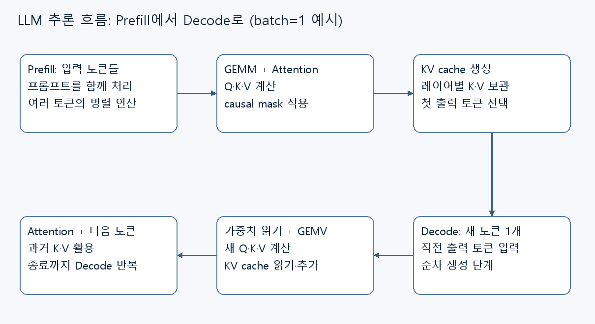
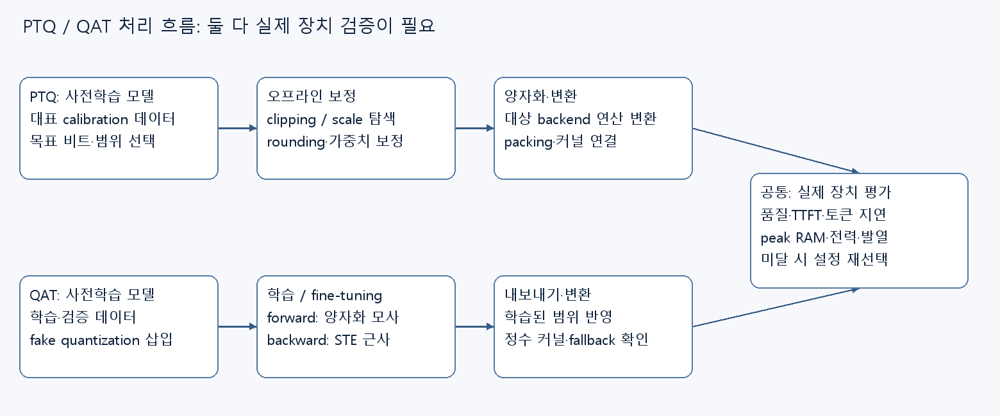
이미지는 원본을 렌더링한 후 핵심 그림·표 영역을 선별해 Crop했다. 조밀하거나 여러 영역이 연결된 페이지, 그림이 없는 텍스트 페이지는 내용 전체를 보존한 여백 Crop을 사용했다. 각 그림 아래의 전체 내용 Crop 링크로 맥락을 대조할 수 있다. 조밀한 표·그림은 이미지를 열어 확대하고 본문의 재작성 표·수식을 함께 읽는다. 표지와 장 구분 페이지도 원본 대응을 위해 포함했다.
원본 범위: PDF p.1–15. 이미지의 페이지 번호는 PDF 파일의 실제 페이지 번호다. 아래에서 원문 요지는 슬라이드의 주장, 교육용 보충은 이해를 돕는 설명, 정정·주의는 계산·전제·표현을 바로잡는 내용이다.
이 장을 마치면 DNN·CNN·Transformer가 어떤 데이터를 계산하는지 설명하고, LLM의 prefill과 decode가 다른 병목을 갖는 이유를 말할 수 있어야 한다. 또한 가중치 저장 용량, 활성값 메모리, KV cache, MACs와 FLOPs를 구분하고 간단한 메모리 예산을 계산할 수 있어야 한다.
필요한 선수 지식은 벡터·행렬의 곱, 곱셈과 덧셈, byte와 bit의 관계다. 벡터는 수를 한 줄로 모은 것, 행렬은 수를 행과 열로 배열한 것이다. **텐서(tensor)**는 벡터·행렬을 포함하는 다차원 수 배열이다. 1 byte는 8 bits이며, 이 문서에서는 GB=10^9 bytes, GiB=2^30 bytes, MB=10^6 bytes, MiB=2^20 bytes를 구별한다. 모델 크기의 B는 billion, 즉 10억 개의 파라미터를 뜻하며 byte와 다르다.

이미지 읽기: p.1은 On-Device AI Part 1의 표지다. 기술 설명이 있는 페이지가 아니며, 이 문서가 첫 번째 강의 자료를 설명한다는 범위를 확인한다.
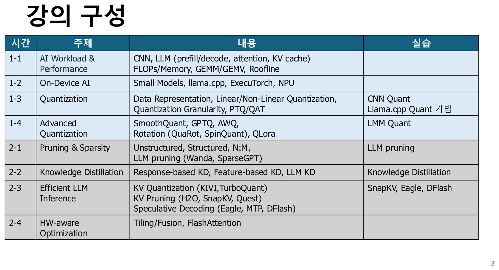
이미지 읽기: p.2의 첫날 네 항목은 연산·성능, 실행 환경, 양자화, 고급 양자화다. 둘째 날 항목은 이후 학습의 위치를 보여주는 예고로 읽는다.
원문 요지: 온디바이스 AI를 이해하려면 먼저 AI 연산의 특성과 하드웨어 제약을 알아야 하고, 그다음 모델 경량화와 양자화를 배운다.
교육용 보충: 이 문서의 학습 질문은 “얼마나 작은 모델인가?”에서 끝나지 않는다. “장치에 올라가는가?”, “사용자가 기다릴 수 있는 시간 안에 답하는가?”, “정확도를 유지하는가?”까지 이어진다. 양자화는 이 세 질문의 균형을 바꾸는 방법이다.
| 범위 | 이 PDF에서 다루는 수준 | 학습 위치 |
|---|---|---|
| AI workload·성능·메모리 | 기초 원리와 계산 | 1장 |
| 소형 모델·추론 프레임워크·NPU | 실행 환경과 구조 | 2장 |
| 양자화 표현·PTQ·QAT | 수식·오차·학습 방법 | 3–5장 |
| LLM 고급 양자화 | outlier·GPTQ·AWQ·QLoRA 등 | 6장 |
| Pruning·KD·KV 최적화·speculative decoding·FlashAttention | 강의 계획상 Part 2 예고 | 본 문서의 상세 설명 범위 밖 |
여기서 **추론(inference)**은 이미 학습된 모델로 입력의 결과를 계산하는 과정이고, **학습(training)**은 예측 오차를 줄이도록 모델 파라미터를 바꾸는 과정이다. **모델 경량화(model compression)**는 저장량·메모리 사용·연산 비용을 줄이는 기법들의 묶음이다.

이미지 읽기: 왼쪽 네트워크에서 입력이 여러 층을 통과하는 경로를 보고, 오른쪽 뉴런에서 곱셈·합산·활성 함수가 연결되는 순서를 확인한다.
**Deep Neural Network(DNN, 심층 신경망)**는 여러 층의 계산을 연결하여 입력을 출력으로 변환하는 모델이다. 한 뉴런의 계산은 다음처럼 쓸 수 있다.
x_i는 i번째 입력, w_i는 학습된 가중치, b는 bias(편향), n은 입력 개수, z는 비선형 함수 이전의 값, y는 출력이다. 값들의 물리적 단위는 모델의 표현에 따라 달라지며, 여기서는 일반적인 수치값으로 다룬다.
**Weight(가중치)**와 bias는 학습 후 저장되는 **parameter(파라미터)**다. **Activation(활성값)**은 특정 입력을 처리하는 동안 만들어지는 중간 결과다. 같은 모델이라도 입력 크기·배치 크기가 달라지면 활성값 메모리가 달라진다. **ReLU(Rectified Linear Unit)**는 음수를 0으로 바꾸는 비선형 함수이며, 여러 층을 단순한 하나의 선형 변환과 다르게 만든다.
교육용 예제: x=[1,2], w=[0.5,-1], b=0.2이면 z=0.5×1−1×2+0.2=−1.3, 따라서 y=0이다. 이 작은 연산을 수많은 뉴런과 층에서 반복하므로 가중치를 읽는 비용과 곱셈·합산 비용이 커진다.
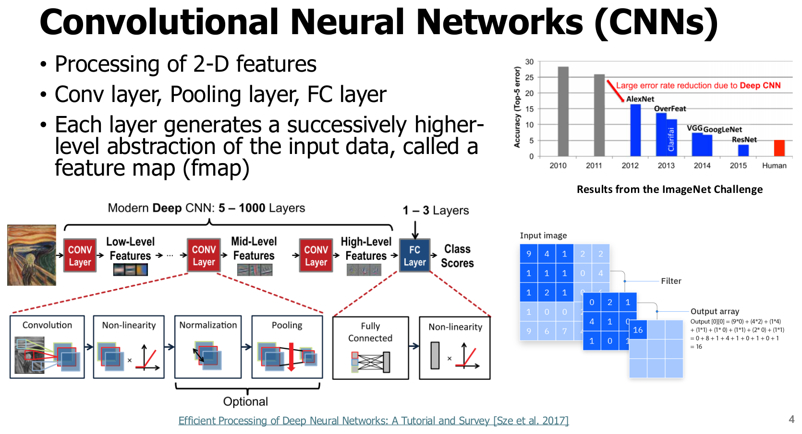
이미지 읽기: 입력 영상에서 convolution과 pooling을 거쳐 분류 결과로 가는 흐름을 따라간다. 층이 깊어질수록 feature map이 표현하는 특징이 더 복합적이 되는 점을 본다.
**Convolutional Neural Network(CNN, 합성곱 신경망)**는 이미지처럼 공간 구조를 가진 데이터를 처리하는 신경망이다. **Convolution(합성곱)**은 작은 가중치 묶음인 **kernel/filter(커널/필터)**를 공간 위치에 반복 적용하는 연산이다. 위치마다 같은 가중치를 재사용하므로 완전연결보다 파라미터를 절약할 수 있다.
| 용어 | 정의 | 메모리·연산 관점 |
|---|---|---|
| Feature map / fmap(특징맵) | 각 위치에서 검출한 특징을 채널별로 모은 활성값 | 높이·너비·채널 수가 크면 중간 메모리가 큼 |
| Channel(채널) | 같은 공간 격자에서 서로 다른 특징을 담는 축 | 입력·출력 채널 수가 합성곱 비용에 영향 |
| Pooling(풀링) | 지역의 최댓값·평균 등으로 공간 크기를 줄임 | 후속 연산과 활성값 크기를 줄일 수 있음 |
| FC / Fully Connected(완전연결층) | 각 출력이 모든 입력과 연결된 층 | 입력·출력 차원의 곱만큼 가중치 필요 |
| Stride(보폭) | 커널을 이동시키는 간격 | 출력 공간 크기를 결정 |
| Padding(패딩) | 입력 경계에 값을 추가하는 처리 | 경계 처리와 출력 크기를 결정 |
| Group convolution(그룹 합성곱) | 채널을 그룹으로 나눠 그룹 안에서 계산 | 일반 합성곱보다 연결·가중치 수 감소 |
정정·주의: CNN이 “항상 compute-bound”인 것은 아니다. 작은 연산, depthwise convolution, 작은 batch, 데이터 이동이 큰 구조는 메모리나 실행 오버헤드에 제한될 수 있다. p.4의 정확도 추세 그림은 모델 발전의 배경이며 현재 모델 순위로 해석하지 않는다.
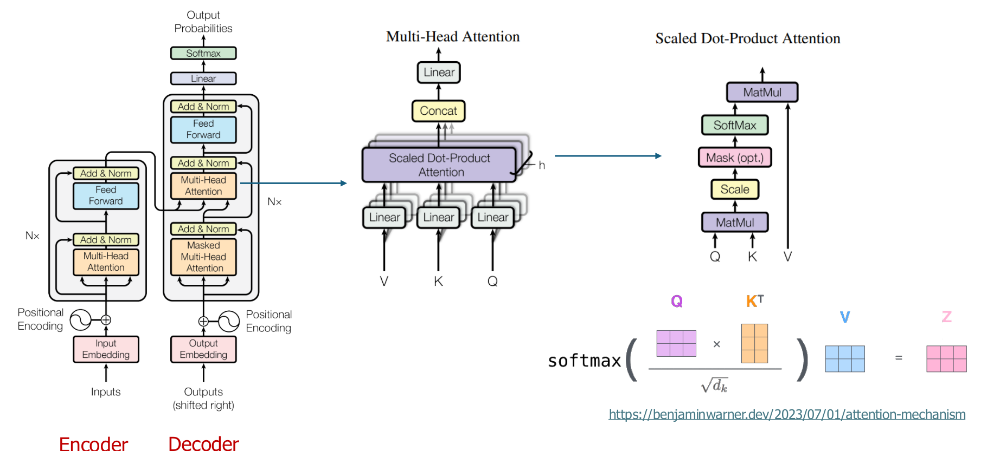
이미지 읽기: encoder·decoder 블록을 구분하고 attention에서 Q·K·V를 만든 뒤 유사도와 가중합을 계산하는 부분을 본다.
**Token(토큰)**은 모델이 처리하는 기본 단위다. 텍스트의 경우 단어 전체 또는 일부, 문자·기호 등이 될 수 있으며 “한 토큰=한 단어”로 고정되지 않는다. **Embedding(임베딩)**은 토큰을 수치 벡터로 바꾸는 표현이다. Transformer는 attention과 위치별 feed-forward 연산을 반복하여 토큰 간 문맥을 반영하는 모델 구조다. 원본 p.5는 encoder–decoder 구조를 보여주지만, 생성형 LLM에는 decoder-only 구조도 널리 쓰인다. Transformer의 출발 구조는 Attention Is All You Need 원 논문에서 확인할 수 있다.
**Self-attention(자기 주의)**은 같은 입력 시퀀스의 토큰 사이 관계를 계산하는 연산이다. 한 head의 기본 형태는 다음과 같다.
Q는 query(현재 토큰이 찾는 정보), K는 key(각 토큰을 찾기 위한 특징), V는 value(실제로 모을 정보) 행렬이다. d_k는 key 벡터의 차원 수이며 무차원 개수다. K^T는 전치 행렬이다. M은 허용하지 않는 위치의 점수에 매우 큰 음수 등을 넣는 **mask(마스크)**다. Softmax는 점수를 합이 1인 가중치로 바꾸는 함수다. 생성형 decoder의 **causal mask(인과 마스크)**는 미래 토큰을 보지 못하게 한다.
**Multi-head attention(MHA, 다중 헤드 주의)**은 서로 다른 투영으로 여러 attention을 병렬 수행한다. **Head(헤드)**는 그중 하나의 attention 계산 단위다. Feed-forward network / MLP는 각 토큰의 특징 차원을 확장·변환하는 신경망 부분이다. **Layer normalization(층 정규화)**은 활성값의 크기를 정돈하는 연산이고, **residual connection(잔차 연결)**은 블록의 입력을 출력에 더해 정보와 학습 신호가 흐르도록 한다.
**Positional encoding/embedding(위치 표현)**은 토큰 순서를 모델이 구별하도록 위치 정보를 반영하는 장치다. attention 식 자체만으로는 토큰 순서를 충분히 표현하지 못하기 때문에 필요하다. 모델에 따라 위치 벡터를 더하거나 Q·K에 회전 형태로 반영하는 등 구현이 다르다. 위 식은 한 head에서 query 토큰 수가 S_Q, key 토큰 수가 S_K일 때 Q∈R^(S_Q×d_k), K∈R^(S_K×d_k), V∈R^(S_K×d_v), 출력은 S_Q×d_v다. d_v는 value 차원이고, prefill의 self-attention에서는 보통 S_Q=S_K, 한 토큰 decode에서는 S_Q=1이다.
교육용 보충: attention만이 LLM 연산의 전부는 아니다. Q/K/V 투영과 MLP의 큰 행렬곱도 중요하다. 따라서 “attention 최적화”와 “전체 LLM 최적화”를 같은 뜻으로 사용하지 않는다.
가중치와 활성값 연결: 입력 활성값을 \(X\)라 하면 \(Q=XW_Q\), \(K=XW_K\), \(V=XW_V\)로 만든다. \(W_Q,W_K,W_V\)는 학습 후 저장하는 투영 가중치이고, \(Q,K,V\)는 입력마다 달라지는 활성값이다. 따라서 가중치 양자화와 KV cache 양자화는 서로 다른 텐서를 대상으로 한다.
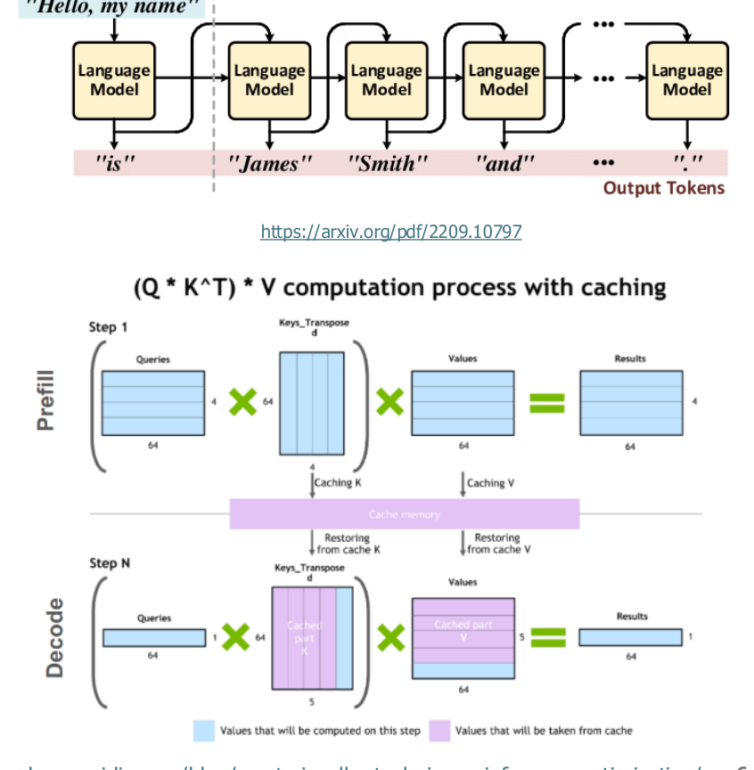
이미지 읽기: prompt를 한 번에 처리하는 단계와 이후 토큰을 하나씩 만드는 단계를 구분한다. 캐시를 쓰는 그림에서는 과거 토큰의 K·V를 다시 만드는 대신 저장한 값을 읽는 부분을 본다.
**Prefill(입력 처리 단계)**은 prompt의 여러 토큰을 처리하여 은닉 상태와 K·V를 만드는 단계다. **Decode(생성 단계)**는 이미 처리한 문맥을 이용해 다음 토큰을 반복 생성하는 단계다. **Autoregressive generation(자기회귀 생성)**은 지금 생성한 토큰을 다음 계산의 입력에 포함하는 방식이다. KV cache는 각 층의 과거 토큰 K·V를 보관하여 재계산을 피하는 메모리다. Q는 현재 위치에서 새로 만들므로 과거 모든 Q를 같은 방식으로 저장할 필요가 없다.
| 비교축 | Prefill | Decode |
|---|---|---|
| 처리 단위 | prompt의 여러 토큰 | 보통 요청마다 새 토큰 1개/반복 |
| 대표 선형 연산 | 여러 토큰의 GEMM | batch=1에서는 GEMV와 유사한 작은 행렬곱 |
| 가중치 재사용 | 많은 토큰이 같은 가중치를 사용 | 작은 batch에서는 재사용이 낮음 |
| KV cache 동작 | prompt K·V를 생성·저장 | 과거 K·V를 읽고 새 K·V를 추가 |
| 흔한 병목 | 비교적 높은 연산 집약도, 긴 prompt의 attention | 가중치·KV 읽기 대역폭, 순차 의존성 |
| 사용자 지표 | 첫 토큰까지 시간 | 다음 토큰 간 지연·생성 속도 |
**GEMM(General Matrix–Matrix Multiplication)**은 행렬–행렬 곱, **GEMV(General Matrix–Vector Multiplication)**는 행렬–벡터 곱이다. Y=XW에서 X에 토큰 행이 많이 있으면 GEMM으로 가중치 재사용을 높일 수 있다. 요청당 새 토큰이 하나이고 batch도 1이면 X의 행 수가 작아 GEMV에 가까워진다.
교육용 보충: **Batch(배치)**는 함께 처리하는 입력 묶음이다. 요청을 묶으면 가중치를 여러 입력에 재사용하여 처리량을 높일 수 있지만, 대기시간과 KV 메모리도 커질 수 있다. **Throughput(처리량)**은 단위 시간의 처리량, **latency(지연시간)**는 한 요청이 기다리는 시간이다. **TTFT(Time To First Token)**는 요청부터 첫 토큰까지 시간, **TPOT(Time Per Output Token)**는 출력 토큰당 시간이다. 토큰화·대기열·샘플링·전송 등을 포함하는지에 따라 측정값이 달라지므로 측정 범위를 명시해야 한다.
정정·주의: p.6의 “prefill=GEMM, decode=GEMV”는 대표 선형층을 이해하기 위한 요약이다. 두 단계 모두 여러 종류의 연산을 포함하며, 큰 batch·긴 문맥·특정 하드웨어에서는 병목이 달라진다.
흐름을 복습할 때는 추론 단계 Canvas를 함께 본다. SVG 미리보기는 Canvas를 열지 않고 읽는 용도다.
단계 경계 보충: 일반적인 자기회귀 생성에서는 prefill의 마지막 위치 출력으로 첫 생성 토큰을 선택한다. 그 토큰을 입력으로 이후 decode를 반복해 두 번째 이후의 생성 토큰을 만든다. 따라서 TTFT와 이후 토큰 간 지연을 구분한다.
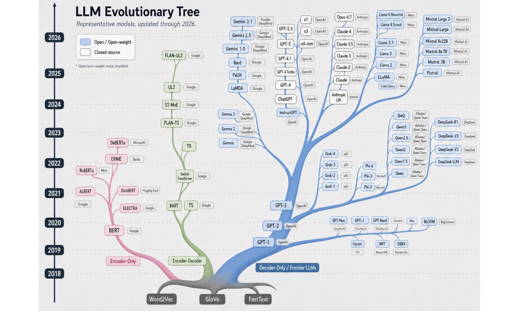
이미지 읽기: p.7은 모델 이름을 암기하기 위한 표가 아니라 LLM 계열이 여러 갈래로 발전했음을 보여주는 계보 지도다. 현재의 전체 모델 목록이나 성능 순위로 읽지 않는다.
**Large Language Model(LLM, 대규모 언어 모델)**은 많은 텍스트 등으로 학습하여 언어 패턴을 모델링하는 큰 신경망이다. 생성형 언어 모델은 문맥 다음에 올 토큰의 확률 분포를 계산하고, **sampling(샘플링)**이나 선택 규칙으로 다음 토큰을 정한다. **Pretraining(사전학습)**은 광범위한 데이터로 기본 표현을 학습하는 과정, **fine-tuning(미세조정)**은 특정 목적·데이터에 맞게 추가 학습하는 과정이다. **Instruction tuning(지시 미세조정)**은 사용자 지시와 응답 예제로 지시 수행 능력을 학습하는 방식이다.
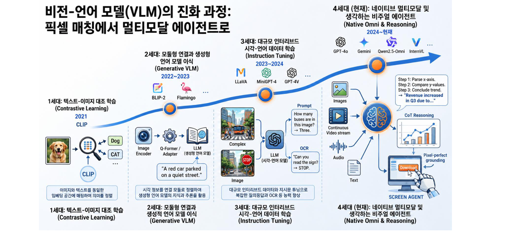
이미지 읽기: p.8은 텍스트–이미지 대조학습, 시각 인코더와 언어 모델의 연결, 지시 학습, 멀티모달 처리로 이어지는 흐름을 요약한다. 그림의 “현재”는 원본 제작 시점의 표현이다.
**Vision Language Model(VLM, 시각–언어 모델)**은 이미지와 언어를 함께 처리하는 모델이다. **Multimodal(멀티모달)**은 텍스트·이미지·음성 등 여러 입력/출력 형태를 다룬다는 뜻이다. **Image encoder(이미지 인코더)**는 이미지를 특징 벡터로 바꾸고, **projector/adapter(투영기/어댑터)**는 그 특징을 언어 모델이 사용할 표현으로 연결한다. **Contrastive learning(대조학습)**은 관련된 이미지–문장 표현을 가깝게, 무관한 쌍을 멀게 학습하는 방식이다. **OCR(Optical Character Recognition)**은 이미지 안의 글자를 읽는 작업이다.
교육용 보충: 이미지를 넣으면 시각 인코더·연결 모듈의 가중치와 활성값이 추가되고, 이미지가 많은 시각 토큰으로 바뀌면 이후 LLM의 prefill과 KV 비용도 커질 수 있다. 따라서 텍스트 LLM의 가중치 용량만으로 VLM의 실행 가능 여부를 판단할 수 없다. 세대 구분과 연도는 그림의 교육적 요약이며 모든 VLM을 엄밀히 나누는 표준 분류는 아니다.
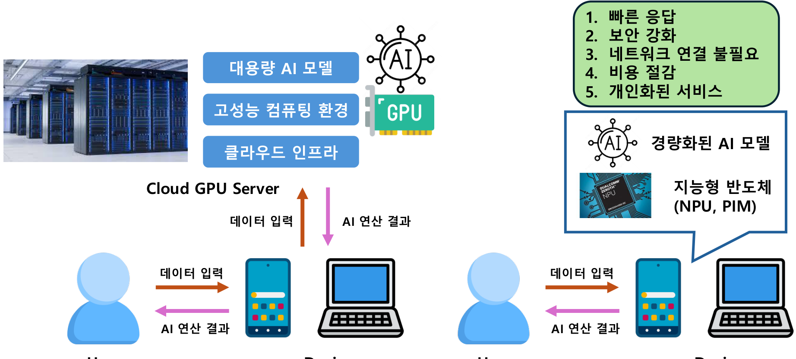
이미지 읽기: cloud 경로는 장치에서 서버로 입력과 결과를 주고받고, on-device 경로는 장치 안에서 연산한다. 화살표가 네트워크를 거치는지 먼저 확인한다.
Cloud AI는 서버 인프라에서 주요 AI 연산을 실행하는 방식이고, On-Device AI는 사용자 장치나 현장 장치에서 주요 AI 연산을 수행하는 방식이다. Edge AI는 데이터 발생 지점 가까이에서 처리하는 더 넓은 개념으로, 개별 장치 외의 가까운 게이트웨이도 포함할 수 있다.
| 비교축 | Cloud AI | On-Device AI |
|---|---|---|
| 자원 | 큰 모델과 서버 가속기 활용 가능 | 장치 메모리·전력·발열 제약 |
| 응답시간 | 네트워크·서버 대기의 영향 | 통신 지연을 줄일 수 있으나 장치 계산 성능에 의존 |
| 데이터 이동 | 서버 전송 경로 설계 필요 | 원시 데이터를 로컬에 유지하도록 설계 가능 |
| 오프라인 | 서버 연결이 필요한 기능은 제한 | 모델·필수 리소스가 로컬에 있으면 가능 |
| 비용 | 서버·네트워크·운영 비용 | 장치 자원·배터리·배포 비용 |
| 모델 갱신 | 중앙 관리가 비교적 용이 | 장치별 버전·호환성 관리 필요 |
정정·주의: 원문의 빠른 응답·보안 강화·비용 절감은 가능한 이점이지 자동 보장되는 결과가 아니다. 로컬 실행이어도 로그·동기화·업데이트 경로에 따라 데이터가 전송될 수 있다. 모델 다운로드나 외부 도구 호출이 필요하면 기능 전체가 오프라인인 것도 아니다.
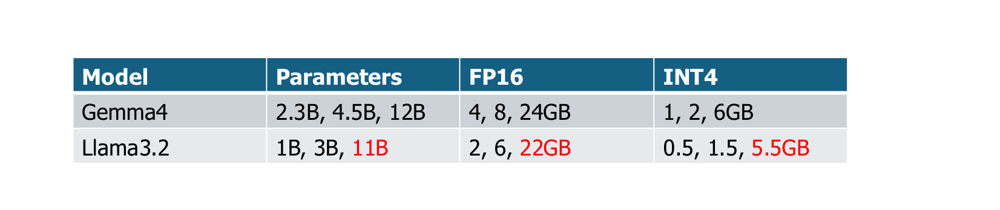
이미지 읽기: 모델 파라미터 수, FP16·INT4 저장량, 장치 RAM을 나란히 비교한다. 장치 전체 RAM이 모델 전용 공간은 아니라는 점을 함께 생각한다.
**RAM(Random Access Memory)**은 실행 중 데이터를 담는 메모리다. 파라미터가 N개이고 각 파라미터의 저장 비트 수가 b라면, 부가 정보가 없는 가중치 저장량은 다음과 같다.
예를 들어 30억(3×10^9) 개를 FP16(16-bit)으로 저장하면 6×10^9 bytes=6 GB≈5.59 GiB, INT4(4-bit)로 저장하면 1.5 GB≈1.40 GiB다. FP16은 16-bit 부동소수점, INT4는 4-bit 정수 표현이다. 양자화 모델에는 scale·zero point·block 정보 등이 추가되므로 실파일은 이 이론값과 다를 수 있다.
정정·주의: p.10의 모델명·기기명·RAM은 강의 원문 예시이며 최신 제품 사양 확인표가 아니다. 특히 원문에서 2.3B·4.5B라 적은 항목은 단순 계산하면 FP16이 각각 4.6·9.0 GB, INT4가 1.15·2.25 GB다. 원문의 4·8 GB, 1·2 GB를 정확한 계산값으로 재사용하지 않는다. 모델의 활성 파라미터 수와 전체 저장 파라미터 수가 다르면 저장량에는 전체 저장 대상을 사용해야 한다.
장치 실행 예산은 적어도 다음 항목을 함께 잡는다.
M_run,peak는 실행 중 최대 메모리, M_KV는 KV cache, M_live act는 동시에 살아 있는 활성값, M_workspace는 커널의 임시 작업 공간, M_runtime은 실행기 관리 공간이다. 실제 메모리 공유·할당 시점에 따라 합산은 달라지므로 계획용 근사다. OS·다른 앱의 메모리는 장치 전체 RAM에서 별도로 빼야 한다.
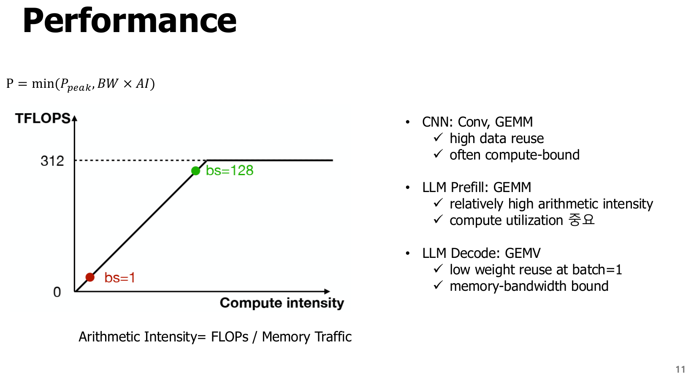
이미지 읽기: 가로축이 커질 때 성능 상한이 기울어진 선을 따라 오르다가 수평선에 제한되는 지점을 본다. decode와 prefill이 놓이는 위치 차이가 중요하다.
**Arithmetic intensity(AI, 연산 집약도)**는 메모리에서 옮긴 1 byte당 수행하는 연산 수다. 이 절의 AI는 인공지능의 약자와 다르다.
F는 작업의 부동소수점 연산 수(FLOPs), T는 선택한 메모리 계층에서 실제 이동한 bytes, P는 달성 성능(FLOP/s), P_peak는 해당 자료형의 연산 성능 상한(FLOP/s), BW는 해당 계층의 대역폭(bytes/s)이다. **Bandwidth(대역폭)**는 단위 시간에 옮길 수 있는 데이터 양이다. Roofline model은 연산 상한과 데이터 이동 상한 중 낮은 쪽으로 성능을 제한하는 모델이다. 원본의 등식은 이상적 상한을 나타내며 실제 성능은 스케줄링·의존성·커널 효율 때문에 더 낮을 수 있다.
| 병목 | 의미 | 우선 생각할 방법 |
|---|---|---|
| Compute-bound | 연산 처리 능력이 주로 제한 | 효율적 커널, 병렬화, 가속기가 지원하는 저정밀 연산 |
| Memory-bandwidth-bound | 데이터를 옮기는 속도가 주로 제한 | 가중치·KV 압축, 재사용, fusion, 메모리 배치 |
| Capacity-limited | 필요한 데이터를 장치 메모리에 담지 못함 | 모델 축소, 양자화, 문맥·batch 조정, offload |
교육용 계산: 가상의 장치에서 P_peak=10 TFLOP/s, BW=100 GB/s라고 하자. AI=10 FLOPs/byte이면 BW×AI=1 TFLOP/s, 따라서 상한은 1 TFLOP/s다. AI=200이면 대역폭 상한이 20 TFLOP/s라 연산 상한 10 TFLOP/s에 제한된다. Tera=10^12다. 실제 장치 성능을 예측한 실측값은 아니다.
작은 batch의 decode는 가중치를 적은 연산에 재사용하므로 AI가 낮아지기 쉽다. 양자화로 가중치 이동 bytes를 줄이면 이 경우 연산기 최고 FLOP/s가 같아도 빨라질 수 있다. 반대로 dequantization 비용이나 지원되지 않는 커널 때문에 이점이 작아질 수 있다.
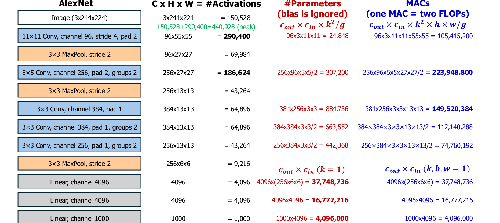
이미지 읽기: 파란색 활성값, 빨간색 가중치, 오른쪽 MACs 열을 따로 읽는다. 같은 층이라도 세 열의 크기가 서로 다른 이유를 확인한다. 원본의 수치 오기는 아래 정정표와 함께 읽는다.
**MAC(Multiply–Accumulate)**은 곱셈한 값을 누산하는 연산이다. 부동소수점 계산에서 이 강의의 관례는 1 MAC=곱셈 1회+덧셈 1회=2 FLOPs다. FLOPs는 부동소수점 연산 개수이고 FLOP/s는 초당 연산 성능이므로 구별한다. 정수 MAC도 두 연산으로 셀 수 있지만 부동소수점 FLOP는 아니다. 벤더의 TOPS는 정수 자료형·희소성·MAC 계수 등의 산정 조건을 함께 확인한다.
정사각 커널의 2D convolution에서 bias를 제외하면 다음과 같다.
C_in, C_out은 입력·출력 채널 수, g는 그룹 수, k는 커널 한 변의 길이, H_out, W_out은 출력 높이·너비다. 개수는 모두 무차원 정수다. batch B_batch개를 처리하는 경우 활성값과 MACs는 그 배수이며 파라미터 수는 변하지 않는다. 완전연결층은 N_W=D_in×D_out, 한 샘플의 N_MAC=N_W다. dilation이 1인 합성곱의 공간 크기는 한 축에 대해 H_out=floor((H_in+2p−k)/s)+1이며, p는 padding, s는 stride다.
검산 예제: 원문의 첫 convolution을 입력 3×224×224, k=11, stride 4, padding 2, 출력 96채널로 읽으면 출력 한 변은 floor((224+4−11)/4)+1=55다. 가중치는 96×3×11×11=34,848개, 활성값은 96×55×55=290,400개, MACs는 34,848×55×55=105,415,200이다.
| 원본 p.12 항목 | 검산 결과 | 해석 |
|---|---|---|
입력 3×244×224, 활성값 150,528 |
3×224×224=150,528 |
표의 다른 수치와 맞추려면 224×224로 읽어야 함. 244라면 첫 출력 높이는 60이며 원본 출력 55와 불일치 |
첫 convolution 가중치 24,848 |
34,848 | 곱셈 결과 오기 |
가중치 합계 약 61M, 224MB |
60,954,656개, FP32 243,818,624 bytes=243.82 MB≈232.52 MiB | 원본에 표시된 8개 가중치 층을 bias 없이 직접 합산한 값 |
| 활성값 전체 932,264 | 932,264개, FP32 3,729,056 bytes≈3.73 MB | 입력·각 층 출력을 모두 합한 값. 동시 사용 peak는 아님 |
| 입력+첫 convolution의 peak 예시 | 440,928개, FP32 1,763,712 bytes≈1.76 MB | 중간 버퍼 재사용을 가정한 단순 예시. workspace와 전체 실행기 메모리는 제외 |
| MACs 합계 약 724M | 724,406,816 MACs, 약 1.449 GFLOPs | 원본 가중치 층의 곱셈·누산만 합산. pooling 등은 별도 |
위 합계는 슬라이드에 제시된 층·출력 크기의 계산을 재현한 것이며, 모든 AlexNet 구현의 정확한 수치가 같다는 뜻은 아니다. bias·padding·전처리·구현 선택에 따라 달라진다.
교육용 보충: 완전연결층은 파라미터 수가 매우 커도 공간 위치마다 반복하지 않으므로 MACs가 convolution보다 작을 수 있다. 파라미터 수만 보고 연산 시간 순서를 판단하지 않는다.
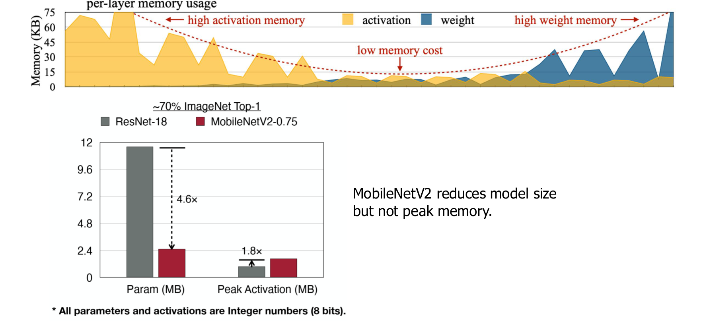
이미지 읽기: p.13의 가중치 저장량 막대와 peak activation 막대를 따로 비교한다. 연산층별 그림에서는 중간 feature map이 커지는 위치를 확인한다.
**Peak memory(최대 메모리 사용량)**는 실행 중 어느 순간에 가장 많은 메모리가 사용되는지 나타낸다. 활성값 전체 합과 다르며, 중간 버퍼의 **lifetime(생존 기간)**이 겹치는지에 따라 달라진다. **Buffer reuse(버퍼 재사용)**는 더 이상 필요 없는 활성값 공간을 다음 연산에 다시 쓰는 기법이다. **Workspace(작업 공간)**는 연산 구현이 임시로 확보하는 공간이다.
원문 요지: MobileNetV2처럼 가중치가 작은 모델도 중간 활성값 때문에 peak memory가 기대만큼 작지 않을 수 있다. 슬라이드의 특정 비교 결과를 모든 입력 해상도와 구현에 일반화하지 않는다.

이미지 읽기: p.14 왼쪽 표는 Llama-2-7B, NVIDIA A6000, sequence length=2048, batch=1이라는 특정 조건의 연산별 Roofline 분석이다. 오른쪽 아래 막대는 Llama-2-13B의 상대 메모리 소비 예시다. 두 영역을 같은 모델·같은 측정 조건으로 합쳐 읽지 않는다. 파란색 weight, 주황색 KV cache, 초록색 임시 활성값을 구분하고, batch나 시퀀스 길이가 바뀔 때 어떤 부분이 커지는지를 본다.
막대의 W4는 가중치 4-bit, A4는 활성값 4-bit, KV4는 KV cache 4-bit를 나타낸다. W4만 적용한 경우 줄지 않은 KV·활성값의 상대적 비중이 커질 수 있다. 이 표기는 저장·연산 정책의 요약이며 어떤 연산까지 4-bit로 실행되는지는 개별 구현을 확인해야 한다. 왼쪽 표에서도 prefill의 큰 선형층은 compute로, softmax·norm·add는 memory로 표시된다. 같은 단계 안에서도 연산별 병목이 다를 수 있다는 예다.
교육용 보충: LLM의 가중치는 같은 모델이면 요청 길이와 무관하게 거의 고정이지만 KV cache는 batch와 문맥 길이에 따라 증가한다. attention score를 큰 행렬로 물질화하는 구현과 메모리 효율적인 구현도 임시 메모리가 다르다. 최종 파일 크기, 로드 직후 메모리, 긴 요청 처리 중 peak를 구분하여 측정해야 한다.

이미지 읽기: 원본 식의 2는 K와 V 두 종류를 뜻한다. 아래 head 그림은 query head 수와 KV head 수를 구분해서 읽는다. mean pooling 화살표는 변환 아이디어를 보여주며 임의 모델을 무손실로 바꾸는 보장으로 해석하지 않는다.
모든 층이 같은 attention 크기를 갖고 전체 문맥을 저장한다고 가정하면 KV cache의 데이터 저장량은 다음과 같다.
| 기호 | 정의 | 단위 |
|---|---|---|
B_batch |
함께 저장하는 요청/시퀀스 수 | 개 |
S |
요청마다 캐시에 보관한 토큰 수 | tokens |
L |
attention 층 수 | layers |
H_KV |
각 층의 K/V head 수 | heads |
d_h |
각 head의 벡터 차원 | elements/head |
p |
K 또는 V 원소당 저장 bytes, FP16이면 2 | bytes/element |
2 |
K와 V 두 텐서 | 무차원 |
원본의 2×B×S×L×D×P는 MHA에서 H_KV×d_h=D(hidden dimension, 은닉 차원)이고 P를 bits가 아닌 bytes/element로 쓸 때 성립한다. GQA·MQA에 hidden dimension을 그대로 넣으면 과대 계산한다. 요청 길이가 서로 다르면 B_batch×S 대신 각 요청의 저장 토큰 수의 합을 써야 한다. padding·paged cache의 빈 공간·메타데이터 등은 이 단순식에 포함하지 않는다.
검산 예제: 원본의 Llama2-7B형 MHA 가정을 따라 batch=1, S=4096, L=32, H_KV=32, d_h=128, FP16=2 bytes라 하자.
토큰 하나당 증가량은 524,288 bytes=0.5 MiB≈0.524 MB다. 원본의 “약 2 GB, 0.5 MB/token”은 이진 단위를 느슨하게 쓴 표현이다. 7×10^9 가중치의 FP16 저장량 근사 14 GB에 이 KV 2.147 GB를 더하면 벌써 약 16.147 GB이고 활성값·workspace·OS는 아직 제외다. INT4 가중치의 이론값 3.5 GB를 사용해도 KV는 별도로 줄이지 않는 한 그대로 남는다.
| 구조 | Query head 수 | KV head 수 | 캐시 크기 관계(다른 조건 동일) | 고려점 |
|---|---|---|---|---|
| MHA | H_Q |
H_Q |
기준 1 | head마다 별도 K/V |
| GQA(Grouped-Query Attention) | H_Q |
1 < H_KV < H_Q |
H_KV/H_Q |
여러 Q head가 한 KV head를 공유 |
| MQA(Multi-Query Attention) | H_Q |
1 | 1/H_Q |
가장 많은 KV 공유 |
예를 들어 32개 query head에 KV head를 8개 쓰는 GQA는 동일 조건의 MHA 대비 KV 데이터량이 1/4이다. 이 구조 구분은 GQA 원 논문과 일치한다. 단, 이미 학습된 MHA의 head 수를 추론 설정만으로 줄여 같은 정확도를 얻을 수 있다는 뜻은 아니다.
| 방법 | 줄어드는 항목 | 대가·전제 |
|---|---|---|
| Batch 축소 | B_batch |
서버 처리량·활용률 감소 가능 |
| 문맥 제한·token pruning | S |
필요한 정보를 잃을 수 있음 |
| 더 작은 모델 | L, head 수·차원 등 |
과제 품질을 재평가해야 함 |
| GQA·MQA 구조 | H_KV |
모델 구조·학습과 연동 |
| KV quantization | p |
복원·scale 비용과 정확도 변화 |
| Offloading(외부 메모리 이동) | 장치에 상주한 양 | 전송 대역폭과 지연, 전체 데이터량 자체는 남음 |
교육용 보충: Offloading은 데이터를 CPU 메모리·다른 저장 계층으로 옮겨 장치의 상주 메모리를 줄이는 방법이다. 압축과 달리 데이터 자체가 줄어드는 것은 아니다. 언제 어떤 데이터를 읽는지까지 고려해야 한다.
| 흔한 오해 | 바로잡기 |
|---|---|
| “4-bit 모델은 FP16보다 무조건 4배 빠르다.” | 가중치 원소당 저장량이 1/4이라는 뜻이다. 전체 메모리·실행 시간 비율은 다르다. |
| “LLM은 언제나 memory-bound다.” | 작은 batch의 decode에서 흔한 경향이다. prefill·큰 batch·긴 문맥은 다시 분석해야 한다. |
| “작은 파라미터 수면 peak memory도 작다.” | 활성값·KV·workspace·버퍼 생존 기간을 함께 봐야 한다. |
| “KV cache의 D는 모든 모델의 hidden dimension이다.” | MHA의 간단식에서만 그렇다. 일반식은 H_KV×d_h를 쓴다. |
100×10^9×10=10^12 FLOP/s, 즉 1 TFLOP/s다.병목과 예산을 알았으면 이를 실제 장치에서 실행할 수 있게 하는 도구가 필요하다. 2장 실행 환경에서는 모델, 추론 프레임워크, 하드웨어의 역할을 분리하고 llama.cpp·ExecuTorch·NPU를 살펴본다.

모델·실행 소프트웨어·하드웨어는 함께 맞춰야 하는 구성요소다. 아래 그림은 각 요소의 역할과 대표 예를 묶어 보여준다. 화살표는 실행 순서나 소프트웨어가 하드웨어를 포함한다는 뜻이 아니다. 상세 배포 순서는 본문의 흐름 설명을 따른다. 원본 범위: PDF p.16–23. 앞 장에서 계산한 가중치·KV·연산·메모리 예산을 실제 장치 배포에 연결한다. 원문 요지, 교육용 보충, 정정·주의를 구분하여 읽는다. 모델 목록과 지원 하드웨어 목록은 원본 강의의 예시이며, 현재 모든 버전의 호환성 보장표가 아니다.
모델, 프레임워크, 가속기가 맡는 역할을 구분하고, llama.cpp와 ExecuTorch가 모델을 장치에서 실행하는 방법을 설명한다. NPU의 이론 연산량과 앱의 실제 지연시간이 다른 이유를 설명하고, 변환→검증→프로파일링의 배포 절차를 세울 수 있어야 한다.
선수 개념은 1장의 parameter·activation·latency·bandwidth다. **Operator(연산자, op)**는 convolution·행렬곱·ReLU 같은 계산 단위, **kernel(커널)**은 특정 장치에서 그 연산을 수행하는 구현 코드다. **Runtime(실행기)**는 모델의 연산을 순서대로 실행하고 메모리·장치 호출을 관리하는 소프트웨어다. **Backend(백엔드)**는 CPU·GPU·NPU 등의 실행 경로를 제공하는 구성 요소다.
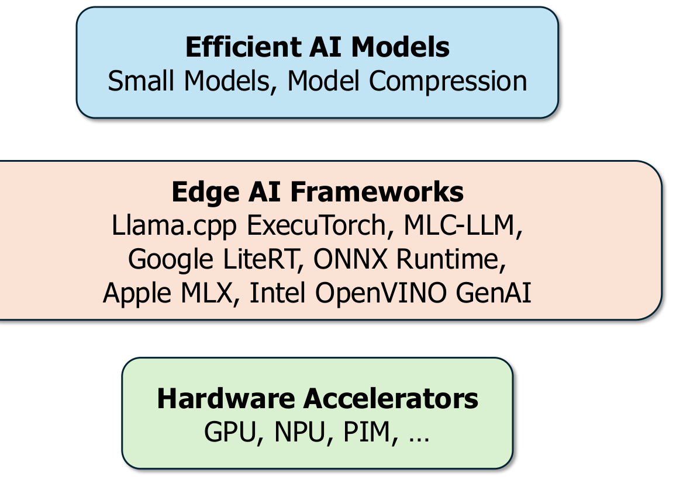
이미지 읽기: 위쪽 모델, 가운데 프레임워크, 아래 가속기의 세 층을 본다. 어느 한 층만 선택해서 끝나는 문제가 아니라 세 층의 호환성을 맞추는 문제다.
원문 요지: Efficient AI models, Edge AI frameworks, Hardware accelerators가 함께 온디바이스 AI를 가능하게 한다.
| 축 | 역할 | 확인할 질문 |
|---|---|---|
| Efficient model(효율적인 모델) | 정확도·저장·연산 요구를 결정 | 과제 품질을 만족하는가? 문맥·입력 크기는? |
| Framework/runtime(프레임워크·실행기) | 모델 로드·변환·스케줄링·커널 호출 | 구조·연산·양자화 형식을 지원하는가? |
| Hardware accelerator(하드웨어 가속기) | 연산과 데이터 이동을 수행 | 메모리·대역폭·자료형·전력 예산이 맞는가? |
**CPU(Central Processing Unit)**는 범용 제어와 연산을 수행한다. **GPU(Graphics Processing Unit)**는 다수 데이터를 병렬 계산하는 데 적합하다. **NPU(Neural Processing Unit)**는 신경망 연산에 맞춘 전용 가속기다. **PIM(Processing In Memory)**은 데이터 이동을 줄이기 위해 메모리 내부 또는 가까이에서 연산하는 접근이다. PIM과 모든 NPU가 같은 구조를 갖는 것은 아니다.
원본은 llama.cpp, ExecuTorch, MLC-LLM, LiteRT, ONNX Runtime, MLX, OpenVINO GenAI를 프레임워크 예시로 든다. 이름만으로 실행 대상을 결정하지 말고, 실제 모델 구조·장치·빌드·정밀도 경로를 함께 확인한다.
교육용 사례: 4-bit 가중치를 가진 모델이 4 GB 안에 들어가더라도, NPU가 그 블록 형식이나 연산을 지원하지 않으면 CPU 경로로 실행될 수 있다. “메모리에 들어간다”와 “가속기를 활용한다”는 별개의 조건이다.
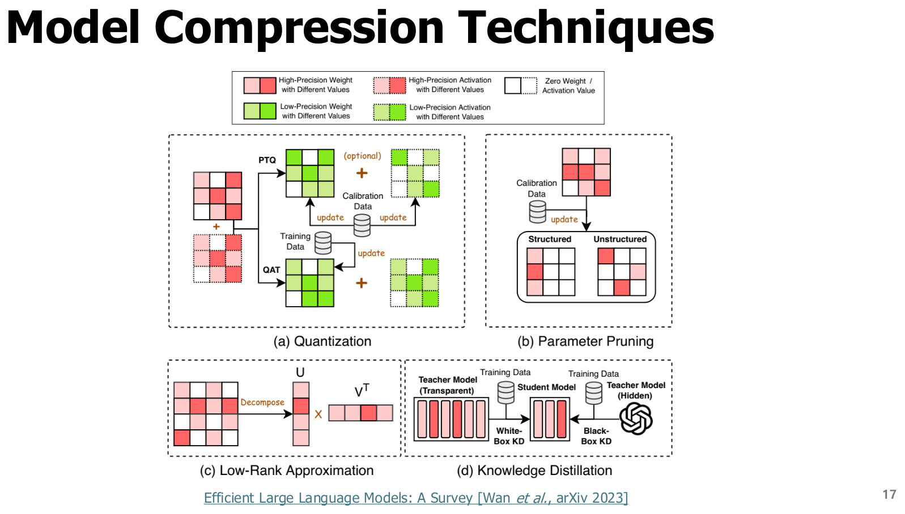
이미지 읽기: 같은 모델 경량화라도 값의 정밀도를 줄이는지, 연결을 없애는지, 구조를 바꾸는지, 다른 모델에서 학습하는지 구분한다.
| 기법 | 정의 | 주로 줄이는 것 | 한계·조건 |
|---|---|---|---|
| Quantization(양자화) | 값을 더 작은 표현 집합으로 근사 | 저장량·메모리 이동, 지원 시 연산 비용 | 오차·메타데이터·커널 지원 고려 |
| Pruning(가지치기) | 중요도가 낮은 가중치·채널 등을 제거 | 연결·연산·저장량 | 비정형 0이 많아도 dense 커널이면 속도 이점 제한 |
| Low-rank factorization(저랭크 분해) | 큰 행렬을 작은 행렬들의 곱으로 근사 | 파라미터·행렬곱 비용 | 근사 오차와 추가 연산 경계 |
| Knowledge distillation(KD, 지식 증류) | 큰 teacher의 출력·특징을 이용해 작은 student 학습 | 배포 모델의 규모 | student 학습과 평가 필요 |
| Parameter sharing(파라미터 공유) | 여러 위치·층에서 같은 값을 재사용 | 독립 저장 파라미터 수 | 모델 설계와 품질 영향 |
교육용 보충: 저랭크 예제에서 W가 1000×1000이고 이를 A 1000×100과 B 100×1000의 곱으로 근사하면, 가중치 수는 1,000,000개에서 200,000개로 줄어든다. 여기서 **rank(랭크)**는 독립적인 선형 정보의 차원 수다. 5배 감소는 이 예제의 파라미터 수 비율이며 품질이나 지연시간 5배 개선을 보장하지 않는다.
이 PDF의 후반은 양자화에 집중한다. pruning과 KD는 강의 계획상 다음 Part에서 상세 학습할 주제이므로 이 표에서는 위치와 정의만 확보한다.
**Dense kernel(조밀 커널)**은 일반적인 조밀 행렬 형태로 계산하는 구현이다. 가중치에 0이 많아도 그 위치를 건너뛰는 희소 전용 경로가 없으면 연산 시간이 비례해서 줄지 않는다.

이미지 읽기: 제공자별 모델 계열과 파라미터 규모를 본다. 원문의 특정 버전·크기는 강의 시점의 사례 목록이며 최신성·완전성을 보장하는 카탈로그가 아니다.
**Small LLM / SLM(소형 언어 모델)**은 자원 제약을 고려해 상대적으로 작게 설계한 언어 모델이다. “small”을 나누는 단일한 절대 파라미터 기준은 없으며 목표 장치와 과제에 따라 판단한다. 원본은 Gemini Nano, Gemma, Llama, MobileLLM, Phi, Ministral, Minitron, Qwen 등의 계열을 예시로 든다. 이 설명자료는 원본 표기의 제품 버전·파라미터 수를 새로 인증하지 않는다.
교육용 보충: 모델 크기에는 전체 파라미터 수, 특정 입력에서 활성화되는 파라미터 수, embedding을 포함하는지 등이 섞일 수 있다. 실제 저장량은 배포 파일에 들어가는 모든 가중치와 부가 정보를 기준으로 계산한다. **Embedding table(임베딩 테이블)**은 토큰 ID별 벡터를 저장하므로 어휘 수가 크면 상당한 저장량을 차지한다.
| 선택 기준 | 확인 방법 | 작은 수치만 고르면 생기는 문제 |
|---|---|---|
| 과제 품질 | 실제 한국어·업무 입력으로 평가 | 파라미터가 작아도 업무 정확도 부족 가능 |
| 실행 메모리 | 가중치+KV+활성값+workspace peak 측정 | 파일은 들어가도 긴 문맥에서 메모리 부족 |
| 응답 성능 | TTFT·TPOT·throughput 별도 측정 | 짧은 예제의 속도가 실제 업무와 다름 |
| 입력·출력 기능 | 텍스트·이미지·도구 사용 요구 확인 | 기능이 없는 모델을 잘못 선택 |
| 실행 지원 | 구조·파일·자료형·backend 조합 확인 | 변환·가속 실패 가능 |
| 배포 조건 | 모델 카드·라이선스·업데이트 방법 확인 | 기술 실행 가능성과 서비스 사용 가능성 혼동 |
처음에는 같은 과제에서 비교 가능한 작은 기준 모델을 정하고, 품질·지연·메모리를 측정한 뒤 양자화를 적용하는 순서가 학습에 적합하다. 특정 모델 구매나 채택을 권하는 목록은 아니다.

이미지 읽기: C/C++ 구현, 저비트 표현, CPU+GPU 혼합 실행이라는 세 가지 역할을 본다. C++로 작성됐다는 사실 자체가 모든 모델·장치에서 높은 성능을 보장하는 것은 아니다.
llama.cpp는 C/C++ 중심의 LLM 추론 프로젝트다. 학습 프레임워크의 모델을 장치가 읽는 형식으로 준비하고 CPU 또는 지원 backend에서 실행한다. 프로젝트의 현재 구조와 지원 범위는 llama.cpp 공식 저장소를 기준으로 확인한다.
| 구성 | 정확한 역할 | 혼동하기 쉬운 점 |
|---|---|---|
| llama.cpp | 모델 로드·토큰 처리·추론 등을 제공하는 실행 프로젝트 | 모델 그 자체나 단일 양자화 알고리즘이 아님 |
| GGML | 텐서 연산을 위한 라이브러리 | 문맥에 따라 과거 파일 형식 이름도 가리켜 구분 필요 |
| GGUF | 모델 텐서와 메타데이터를 담는 파일 형식 | 연산 라이브러리가 아니며 GGUF라는 이름만으로 같은 정밀도인 것도 아님 |
| Quantization format | 가중치·scale 등을 저장·해석하는 구체 방식 | 4-bit 계열 안에서도 블록·혼합 정밀도·부가 정보가 다름 |
정정·주의: p.19의 “GGUF and GGML: tensor library”는 두 역할을 혼합한 표현이다. GGUF는 추론 모델의 텐서와 메타데이터를 담는 파일 형식으로 구별해야 한다. 이 구분은 GGUF 공식 명세에 근거한다.
**CPU+GPU hybrid inference(혼합 추론)**는 모델의 일부를 CPU·시스템 메모리에, 일부를 GPU 경로에 배치하는 실행 방식이다. Offload는 이 배치와 이동을 조정하는 행위를 가리킬 수 있다. 가속기에 올리는 양이 늘면 항상 빨라지는 것이 아니라 전송·메모리·연산 균형을 측정해야 한다.

이미지 읽기: 왼쪽 구조도는 입력·모델 실행·backend의 연결을 보고, 오른쪽 화면은 실제 로드와 실행 결과를 확인하는 예로 읽는다. 화면의 명령·모델·경로를 현재 버전에서 그대로 실행 가능한 실습 스크립트로 취급하지 않는다.
교육용 실행 절차: 원본 모델의 구조와 tokenizer를 확인하고, 실행기가 지원하는 모델 파일을 준비한다. 필요하면 지원 형식으로 변환·양자화한다. 이어 CPU/GPU 경로·문맥 크기·batch 등을 설정해 로드하고, prefill·decode를 수행하며 품질·속도·메모리를 측정한다. 변환 성공은 정확도 보존이나 최적 성능의 증거가 아니므로 기준 출력과 비교한다.
**Tokenizer(토크나이저)**는 텍스트를 토큰 ID로 바꾸고 다시 텍스트로 복원하는 구성 요소다. **Chat template(대화 템플릿)**은 역할·구분 토큰 등 모델이 기대하는 대화 입력 형식이다. 같은 가중치라도 tokenizer·template이 맞지 않으면 출력 품질이 나빠질 수 있다. **Context length(문맥 길이)**는 처리·보관할 토큰 범위이며 메모리와 연관된다.
| 단계 | 확인할 증거 |
|---|---|
| 로드 | 모델 구조·tokenizer·양자화 형식·설정값이 의도와 일치 |
| 기능 | 기준 prompt에서 정상 출력, 필수 기능 동작 |
| 품질 | 동일 데이터·template에서 비양자화 기준과 비교 |
| 성능 | 같은 prompt 길이·출력 길이·batch에서 TTFT·TPOT·peak memory 측정 |
| 지속 실행 | 반복 요청 중 발열·전력·속도 변화 관찰 |
이 장은 개념 중심 설명이다. 원본 화면의 명령을 검증하지 않은 상태에서 복사 가능한 최신 설치 명령으로 제시하지 않는다.

이미지 읽기: 개발 PC에서 준비하는 export·변환 경로와 장치에서 실행하는 runtime 경로를 분리한다. backend로 보내는 부분과 공통 실행 경로가 어디에서 나뉘는지 본다.
ExecuTorch는 PyTorch 모델을 edge 장치에 배포·추론하기 위한 실행 체계다. **AOT(Ahead-of-Time compilation, 사전 컴파일)**는 실행 전에 모델의 연산 그래프를 분석·변환하여 장치용 실행 계획을 준비하는 방식이다. **Export(내보내기)**는 모델 계산을 명시적인 그래프로 캡처하는 과정이며, **IR(Intermediate Representation, 중간 표현)**은 변환·최적화에 쓰는 모델 표현이다. **Lowering(하향 변환)**은 그래프를 더 구체적인 장치·실행 수준으로 변환하는 과정이다.
**Backend delegation(백엔드 위임)**은 실행 그래프의 지원 부분을 특정 가속기용 컴파일러·실행 경로에 맡기는 방식이다. 원본의 EXIR은 ExecuTorch의 export 중간 표현을 가리킨다. 세부 IR 명칭·API는 버전별 문서와 맞춰야 한다.
교육용 흐름: PyTorch 모델 → export된 그래프 → edge용 변환·양자화·지원 부분 partition → backend compile 및 메모리 계획 → 실행 프로그램 → 장치 runtime 순으로 이해한다. **Partition(분할)**은 그래프 중 어떤 부분을 어느 backend가 맡는지 나누는 과정이다. 실제 변환 순서는 backend와 버전에 따라 달라진다. export→compile→run이라는 큰 구조는 ExecuTorch 공식 동작 설명에 근거한다.
| 비교축 | llama.cpp 중심 접근 | ExecuTorch 중심 접근 |
|---|---|---|
| 대표 출발점 | 지원 LLM과 실행 가능한 모델 파일 | PyTorch 모델과 export 그래프 |
| 핵심 추상화 | LLM 실행기·텐서 backend·모델 형식 | 그래프 변환·실행 프로그램·delegate |
| 최적화 위치 | 형식별 커널·backend·메모리 배치 | AOT 변환·partition·backend compile·메모리 계획 |
| 사전 확인 | 모델 구조·GGUF·양자화·backend 호환성 | export 가능성·연산 지원·delegate 제약 |
| 공통 검증 | 품질·지연시간·peak memory·전력 | 품질·지연시간·peak memory·전력 |
정정·주의: 목록에 장치 제조사가 있다고 모든 모델의 모든 연산이 해당 NPU로 가는 것은 아니다. unsupported op(미지원 연산)가 남거나 그래프 분할로 장치 간 복사가 늘면 실제 속도가 달라진다. **Fallback(대체 실행 경로)**은 가속 경로가 처리하지 못하는 연산을 다른 backend 등으로 실행하는 처리다. 가능한 fallback의 종류는 실행기·빌드마다 다르므로 자동 CPU 실행을 항상 보장한다고 쓰지 않는다.

이미지 읽기: p.22의 PLENA 구조도에서 matrix unit, vector/scalar unit, SRAM, 외부 메모리 controller를 나누어 본다. 선의 색과 범례로 제어 흐름과 데이터 흐름을 구분한다. 이 그림은 특정 설계 예시이며 모든 상용 NPU의 표준 블록도가 아니다.
| 블록·용어 | 정의와 역할 |
|---|---|
| Matrix unit(행렬 연산부) | 큰 행렬곱을 병렬 수행하는 부분 |
| Systolic array(시스톨릭 배열) | 연산 소자 사이로 데이터를 규칙적으로 흘려 곱셈·누산을 수행하는 배열 |
| Vector unit(벡터 연산부) | 원소별 계산·축소 등 벡터 성격의 연산 처리 |
| Scalar unit(스칼라 연산부) | 단일 값 계산·일부 제어·보조 연산 처리 |
| Reduction(축소 연산) | 합·최대값처럼 여러 원소를 더 작은 결과로 모으는 연산 |
| SRAM(Static Random Access Memory) | 칩 내부의 빠른 메모리. 용량이 제한되어 데이터 재사용 계획이 중요 |
| HBM(High Bandwidth Memory) | 높은 대역폭을 제공하는 외부 메모리 기술. 모든 NPU가 사용하는 것은 아님 |
| Controller(제어기) | 메모리 접근·명령 실행 등을 조정하는 구성 요소 |
| LUT(Lookup Table, 조회표) | 미리 준비한 값으로 연산의 일부를 대체하는 표 |
교육용 보충: 행렬 연산기가 빨라도 데이터가 늦게 도착하면 기다려야 한다. LayerNorm·softmax처럼 행렬곱 이외의 연산, quant/dequant(양자화/복원), 메모리 복사도 전체 시간에 포함된다. **TOPS(Tera Operations Per Second)**는 초당 10^12 operations라는 이론 연산 성능 단위다. 자료형·희소성·MAC 산정·지속 전력 조건이 다를 수 있으므로 TOPS 수치만으로 앱 지연시간을 비교하지 않는다.
원문 범위 주의: 그림의 inverse Hadamard transform과 quantizer/dequantizer는 이 설계가 변환과 저정밀 저장을 결합함을 보여준다. 이것이 일반 NPU의 필수 기능이라는 뜻은 아니다. 회전·Hadamard를 통한 양자화 개선은 6장에서 연결한다.
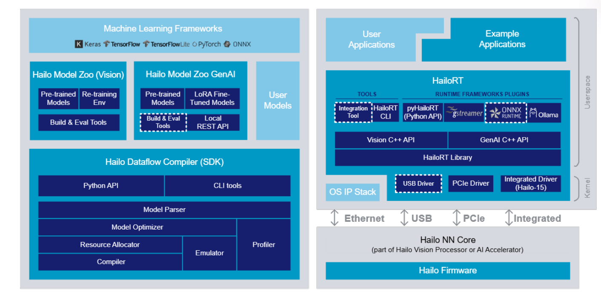
이미지 읽기: 왼쪽 Model Build Environment는 모델을 준비하는 경로, 오른쪽 Runtime Environment는 앱이 장치에서 실행되는 경로다. parser→optimizer→resource allocator→compiler와 application→runtime→driver→firmware의 책임 차이를 본다.
원문 요지: Hailo 예시는 모델을 가속기에 맞는 형태로 만드는 개발 소프트웨어와, 장치에서 모델을 실행하는 runtime·driver·firmware의 층을 보여준다. 그림에 표시된 플러그인·인터페이스의 실제 지원 여부는 해당 제품·소프트웨어 버전 문서에서 확인해야 한다.
| 용어 | 역할 | 일반적인 문제 예 |
|---|---|---|
| SDK(Software Development Kit) | 개발용 도구·라이브러리 묶음 | 대상 장치·모델·호스트 환경 호환성 |
| Model parser | 원본 모델의 구조와 연산을 읽음 | 지원하지 않는 연산·입력 shape |
| Model optimizer | 수치 표현·그래프 등을 조정 | 변환 후 정확도 하락 |
| Resource allocator | 연산과 버퍼를 장치 자원에 배치 | 메모리·연산 자원 제약 |
| Compiler(컴파일러) | 장치가 실행할 프로그램으로 변환 | 변환 실패·비효율적인 배치 |
| Emulator(에뮬레이터) | 장치 동작을 소프트웨어로 재현·검토 | 실기기의 전송·발열·지연을 전부 대체할 수 없음 |
| Profiler(프로파일러) | 시간·메모리·실행 경로 등을 계측 | 병목의 위치와 원인 구분 |
| Runtime / HailoRT | 앱의 실행 요청과 장치 실행 관리 | 프로그램 로드·입출력·동시성 설정 |
| Driver(드라이버) | OS와 장치의 통신 연결 | OS·장치·runtime 버전 불일치 |
| Firmware(펌웨어) | 장치 내부 동작을 제어하는 소프트웨어 | 지원 버전·기능 조합 |
| Model Zoo | 검증·준비된 모델과 예제의 모음 | 모든 사용자 모델을 그대로 지원하는 것은 아님 |
교육용 보충: 한 프레임워크에서 정확히 동작한 모델도 변환 시 연산 분해·자료형·입력 shape가 달라질 수 있다. **Shape(형상)**는 텐서의 각 차원 크기다. **Calibration data(보정 데이터)**는 양자화 범위·scale 등을 정할 때 쓰는 대표 입력 집합으로 4장에서 자세히 다룬다. 변환 전과 후를 같은 입력으로 비교하고, 마지막에는 실제 보드에서 성능을 측정해야 한다.
범례 주의: p.23의 흰 점선 테두리는 원본 범례에서 Future support (for Hailo-10H)로 표시한 부분이다. 원본 제작 시점의 향후 지원 표시이므로 현재 제공 기능으로 단정하지 않는다.
아래는 원본의 모델–프레임워크–하드웨어 구성을 실제 학습 과제로 연결한 보충 양식이다. 통합 문서의 Canvas에서는 이 준비·실행 흐름을 시각적으로 따라갈 수 있다.
온디바이스 배포는 작은 모델을 선택하는 데서 끝나지 않는다. 모델의 계산·표현을 실행기가 이해해야 하고, backend가 이를 실제 장치의 연산·메모리에 맞게 실행해야 한다. 모델 파일 형식과 연산 라이브러리, 개발용 compiler와 장치 runtime을 구분하면 변환·품질·속도 문제를 어디에서 확인할지 명확해진다.
| 흔한 오해 | 바로잡기 |
|---|---|
| “GGUF가 저비트 연산 라이브러리다.” | GGUF는 파일 형식이다. 실행 커널은 라이브러리·backend가 제공한다. |
| “export 성공이면 NPU에서 전체 모델이 실행된다.” | 지원 연산·분할·컴파일·실제 실행 경로를 확인해야 한다. |
| “NPU TOPS가 크면 반드시 응답이 빠르다.” | 대역폭·전송·미지원 연산·전력·커널 효율에 따라 달라진다. |
| “소형 모델이면 한국어 업무 품질도 충분하다.” | 사용 과제와 대표 데이터에서 검증해야 한다. |
| “emulator가 통과하면 실기기 측정은 생략해도 된다.” | 장치 전송·지속 전력·발열·실행 경로는 실기기에서 확인한다. |
이제 모델과 실행 경로를 구분할 수 있다. 다음 3장에서는 모델을 작은 수 표현으로 바꾸는 양자화를 배운다. “몇 비트인가?”뿐 아니라 scale·zero point·clipping·블록 부가 정보·실행 커널을 함께 보는 이유가 이 장의 실행 환경과 연결된다.

분류 기준: 이 그림의 Linear는 공유 scale 안에서 대표값 간격이 일정한 uniform/affine 양자화, Nonlinear는 대표값 간격이 달라지는 non-uniform 양자화를 뜻한다. 신경망의 비선형 활성함수 분류와는 다르다. 아래 지도는 강의에서 다룬 대표 기법을 정리한 것이며 모든 양자화 방법을 망라한 목록은 아니다.
| 가지 | 대표 기법·표현 | 핵심 차이 | 본문 연결 |
|---|---|---|---|
| 선형·대칭 | Z=0인 INT8·INT4 affine 표현 | 실수 0을 코드 0으로 표현 | 이 장 3.7–3.8 |
| 선형·비대칭 | 범위에 따라 Z를 선택하는 affine 표현 | 치우친 범위를 활용; Z가 0일 수도 있음 | 이 장 3.7–3.8 |
| 비균일·로그 | Log quantization, INQ의 거듭제곱 값 | 0 또는 ±2^k 등 비균일 대표값 | 이 장 3.6, 4장 4.3 |
| 비균일·스칼라 | NF4, 학습 codebook, binary-code 조합, FP4 | 원소마다 비균일 대표값·조합값 선택 | 이 장 3.4, 4장 4.2–4.3 |
| 벡터 단위의 별도 분류 | QuIP#, AQLM | 여러 값을 공동 codeword로 표현; 스칼라 간격 기준과 구별 | 4장 4.4 |
다른 분류축과 구별하기: PTQ/QAT는 변환·학습 방식이고, per-channel/group은 scale 공유 단위다. GPTQ·AWQ·SmoothQuant·QuaRot 등은 오차 제어나 사전 변환 기법이며, 그 이름만으로 대표값이 선형인지 비균일인지 정해지는 것은 아니다. FP4는 지수 때문에 원소 대표값 간격이 일정하지 않으며 MXFP4·NVFP4는 FP4 원소에 블록 scale을 결합한 표현이다. VQ는 벡터 단위의 별도 분류축이므로 Non-uniform의 엄밀한 하위집합으로 두지 않았다. 특히 E8 격자에는 1차원 대표값 간격 기준을 그대로 적용하지 않는다. Binary-code 조합도 계수 선택에 따라 균일해질 수 있으며, 여기서는 4장의 비균일 예제를 가리킨다.
원본 범위: PDF p.24–38. 원본의 개념을 설명하는 부분은 강의 해설, 이해를 돕는 추가 예제는 교육용 보충, 잘못 읽기 쉬운 식·수치는 정정·주의로 구별한다. 그림은 원본 PDF의 본문 영역 Crop이다.
이 장을 마치면 비트 수를 줄일 때 무엇이 손실되는지 설명하고, scale과 zero point를 직접 계산해 양자화·복원할 수 있어야 한다. 또한 “4비트 모델”의 파일 크기와 실제 정수 연산의 속도가 서로 다른 문제임을 구별할 수 있어야 한다.
선수 개념은 1장의 가중치(weight: 학습으로 정해지는 모델 계수), 활성값(activation: 입력에 따라 달라지는 중간 계산값), 메모리 대역폭, 2장의 **실행 커널(kernel: 장치에서 특정 연산을 수행하는 구현)**이다. 행렬곱은 여러 곱셈 결과를 더하는 내적의 모음으로 이해하면 된다.

p.24 읽는 포인트: 이 페이지는 장 구분 페이지다. 아래 압축 지도에서 같은 모델 구조를 두고 숫자 표현을 바꾸는 양자화의 위치를 확인한다. 연결 자체를 제거하는 pruning과 구분한다.

강의 해설: Quantization(양자화)은 연속적이거나 매우 촘촘한 실수 표현을 더 적은 수의 대표값으로 대응시키는 과정이다. b비트는 최대 2^b개의 비트 패턴을 구별할 수 있다. INT8은 256개, 4비트는 16개 패턴이다. 부동소수점 형식은 특수값·중복된 0 등으로 인해 모든 패턴이 서로 다른 유한 실수를 뜻하지는 않는다.
그림에서 원래 분포의 값들이 몇 개의 수직선으로 모이는 모습을 본다. 값이 많고 대표값이 적을수록 여러 실수가 같은 값으로 표현된다. 따라서 보통 저장량과 메모리 전송량을 줄이는 대신 복원 오차가 생긴다. 적절한 커널과 장치가 있으면 저정밀 연산의 처리량도 높일 수 있다.
교육용 보충: 가중치가 N개이고 각각 b비트라면 순수 가중치 payload는 N×b/8바이트다. 예를 들어 10억 개의 FP16 가중치는 2 GB, INT4 payload는 0.5 GB다(여기서 GB는 10^9바이트). 실제 파일에는 scale, zero point, codebook, 텐서 정렬·헤더 등이 붙는다. 실행 중에는 KV cache와 작업 버퍼도 추가된다.
정정·주의: 원문의 FP32 → FP16 → INT8 → INT4 → INT2 → Binary는 비트 축소 방향을 보여주는 예다. 모든 모델을 이 순서대로 변환해야 하거나, 각 단계가 같은 비용·정확도를 갖는다는 뜻은 아니다. FP16은 부동소수점이고 INT8은 보통 scale을 따로 갖는 정수 표현이다.

p.26 읽는 포인트: 왼쪽의 지수부·가수부 비트 수와 오른쪽의 표현 간격을 함께 본다. 비트 수가 같아도 작은 값과 큰 값을 얼마나 넓게 표현하는지, 특정 크기 주변을 얼마나 촘촘히 표현하는지는 다르다.
| 용어 | 정의 | 양자화에서의 의미 |
|---|---|---|
| Sign, 부호 | 양수·음수를 구분하는 비트 | 양·음의 가중치 표현 |
| Exponent, 지수부 | 대략적인 크기를 2의 거듭제곱으로 정하는 부분 | 넓은 동적 범위를 표현 |
| Mantissa/Fraction, 가수부 | 같은 지수 범위 안에서 값을 세분하는 부분 | 가까운 두 수를 구별하는 정밀도 |
| Dynamic range, 동적 범위 | 표현 가능한 작은 크기와 큰 크기의 범위 | 큰 outlier와 작은 값을 함께 담을 수 있는가 |
| Precision, 정밀도 | 가까운 수를 구별하는 정도 | 범위가 넓다고 정밀도까지 높은 것은 아님 |
| Outlier, 이상치 | 다른 값보다 유난히 큰 절댓값을 갖는 값 | 공통 scale을 크게 만들어 보통 값의 정밀도를 악화시킬 수 있음 |
| 형식 | 총비트 | 부호/지수/가수 | 특징과 주의 |
|---|---|---|---|
| FP32 | 32 | 1/8/23 | 범위와 정밀도가 높지만 저장·전송 비용 큼 |
| FP16 | 16 | 1/5/10 | BF16보다 촘촘하지만 유한값 범위가 좁음. 최대 유한값 65,504 |
| BF16 | 16 | 1/8/7 | FP32와 같은 지수 비트 수, FP16보다 적은 가수 비트 |
| INT8 | 8 | 부동소수점 지수·가수 구분 없음 | signed 범위는 보통 −128~127. 실제 실수 범위는 scale·zero point로 결정 |
교육용 보충: 부동소수점은 크기가 커질수록 인접 표현값의 절대 간격이 커진다. 선형 정수 양자화는 하나의 scale을 공유하는 구간에서 실수 간격이 일정하다. 따라서 FP8·FP4를 “작은 INT8·INT4”로 읽으면 안 된다.

강의 해설: Microscaling(MX)은 작은 블록의 여러 원소가 하나의 scale을 공유하도록 하는 표현 방식이다. **Block(블록)**은 같은 scale로 해석할 원소 묶음이다. MXFP4는 32개 원소마다 8비트 E8M0 scale을 공유하고, 각 원소는 E2M1 FP4로 저장한다. E2M1은 지수 2비트·가수 1비트에 부호 1비트를 더한 4비트 형식이다.
p.27 읽는 포인트: 표의 양의 대표값은 0, 0.5, 1, 1.5, 2, 3, 4, 6이다. 부호를 붙이면 음수도 표현한다. 모든 간격이 같지 않다. 블록 scale을 곱하면 이 작은 수 집합이 블록의 실제 크기에 맞춰진다.
정정·주의: 원문의 2^K는 K를 실제 지수로 해석할 때의 개념식이다. 저장된 E8M0 코드가 k라면 유한 scale은 2^(k−127)이다. 127의 **exponent bias(지수 편향)**를 빼야 한다. FP4에서도 지수 비트가 0인 경우는 일반 정규수 식을 그대로 쓰지 않고 subnormal(비정규수) 규칙을 사용하므로 0과 0.5가 표현된다. OCP MX 공식 규격

p.28 읽는 포인트: 원소의 E2M1 형식이 같아도 scale 형식과 블록 크기가 다르다. NVFP4는 블록당 16개 원소에 FP8 E4M3 scale을 붙이고, 텐서 전체 FP32 scale을 추가한다. 복원은 원소 FP4값 × 블록 scale × 전체 scale로 이해한다. NVIDIA NVFP4 공식 설명
| 비교축 | MXFP4 | NVFP4 |
|---|---|---|
| 원소 형식 | E2M1, 4비트 | E2M1, 4비트 |
| 블록 크기 | 32개 | 16개 |
| 블록 scale | E8M0, 8비트 | E4M3, 8비트 |
| scale 표현 | 2의 거듭제곱 | 가수부를 갖는 FP8 값 |
| 전체 scale | 여기서 비교하는 기본 형식에는 없음 | 텐서당 FP32 한 개 |
| metadata 포함 비트/원소 | 4 + 8/32 = 4.25 |
N개 원소 기준 4 + 8/16 + 32/N = 4.5 + 32/N |
| 선택 시 확인 | 형식·블록 배치·커널 지원 | 형식·두 단계 scale·커널 지원 |
교육용 보충 — 검산: N=1,024개라면 MXFP4는 1,024×4 + 32×8 = 4,352비트 = 544바이트다. NVFP4는 1,024×4 + 64×8 + 32 = 4,640비트 = 580바이트, 즉 원소당 4.53125비트다. 블록이 꽉 차며 추가 padding·헤더가 없다는 가정이다.
정정·주의: NVFP4를 MXFP4의 단순한 상위 버전으로만 이해하기보다 서로 다른 scale 설계로 구분한다. 더 작은 블록·세밀한 scale은 오차를 줄이는 데 도움이 될 수 있지만 metadata가 늘고, 장치 지원에 따라 성능이 달라진다. 특정 장치에서의 실제 지원은 배포 시점에 확인해야 한다.

이 페이지는 이미지로 된 종합 지도다. 글을 한 줄씩 외우기보다 서로 독립적인 선택축을 구별한다. 예를 들어 “4비트”는 비트 수만 정할 뿐, 어떤 텐서를 양자화하는지와 scale을 공유하는 범위를 정하지 않는다.
| 설계축 | 질문 | 예시와 이후 학습 위치 |
|---|---|---|
| 표현 수준 | 대표값 간격은 같은가? | Uniform·non-uniform, 이 장과 4장 |
| 원점 | 실수 0을 어느 정수로 나타내는가? | 대칭·비대칭, 3.8절 |
| 형식·비트 수 | 어떤 비트 패턴을 쓰는가? | INT8, INT4, FP4, ternary |
| Granularity, 공유 범위 | 몇 개 값이 같은 scale을 쓰는가? | tensor·channel·token·head·group, 4장 |
| 결정 시점 | scale을 언제 구하는가? | static·dynamic, 4장 |
| 최적화 방식 | 학습 후 보정하는가, 양자화를 넣고 학습하는가? | PTQ·QAT·미세조정, 4–6장 |
| 대상 텐서 | 무엇을 줄이는가? | weight·activation·KV cache, 6장 |
| 사전 변환 | 분포를 어떻게 다듬는가? | smoothing·rotation·clipping·outlier 분리, 6장 |
| 실제 실행 | 시뮬레이션인가 실제 커널인가? | fake quant와 저정밀 커널, 5장 |
교육용 보충: W4A16은 가중치(weight) 4비트, 활성값(activation) 16비트라는 표기다. codebook/VQ는 대표값을 정하는 표현 방식이며, 그 자체가 scale 공유 범위인 granularity를 뜻하지 않는다. group-wise codebook처럼 두 축을 조합할 수 있다.
이 지도의 실무 흐름은 배포 상황·병목 확인 → 대상 텐서 결정 → 장치가 지원하는 형식과 granularity 선택 → 오차 복구 → 실제 커널로 검증이다. 통합 문서의 Canvas에서 이 흐름을 다시 확인한다. 원문의 decode·prefill 병목 표시는 대표적인 경향이며 batch와 문맥 길이에 따라 달라진다.
관련 절차는 양자화 흐름 Canvas와 미리보기에서도 확인할 수 있다.

p.30 읽는 포인트: 아래 분포에서 대표값을 일정 간격으로 둘 때와 값이 많이 몰린 곳에 촘촘하게 둘 때를 비교한다. 오른쪽 log 그림은 크기가 커질수록 간격이 커지는 예다.
| 비교축 | Uniform / linear, 균일 양자화 | Non-uniform, 비균일 양자화 |
|---|---|---|
| 대표값 간격 | 공유 범위 안에서 일정 | 위치에 따라 다름 |
| 복원 예 | r̃=S(q−Z) |
codebook 조회, 지수값·조합값 복원 등 |
| 장점 | 정수 행렬곱·고정소수점 구현과 연결하기 쉬움 | 특정 분포에 대표값을 집중할 수 있음 |
| 한계 | outlier 때문에 작은 값 정밀도가 낮아질 수 있음 | lookup·복호화와 전용 커널 비용이 생길 수 있음 |
| 강의 예 | 대칭·비대칭 INT8 | Log, NF4, binary code, VQ |
**Logarithmic quantization(로그 양자화)**은 크기를 로그 축에서 나눠, 대표값을 대체로 2의 거듭제곱 등으로 두는 방식이다. 이런 수와의 곱셈은 일부 상황에서 shift로 바꿀 수 있지만, 누적과 부호·지수 처리 비용까지 사라지는 것은 아니다.
정정·주의: 슬라이드의 VGG-16 정확도 손실 수치는 인용 연구의 설정에서 나온 비교다. 모든 4비트 선형 양자화가 같은 정확도 손실을 낸다는 규칙으로 쓰지 않는다. 비균일 방식도 모델 분포와 커널이 맞아야 유리하다.

원본의 핵심을 clipping까지 포함해 쓰면 다음과 같다.
| 기호 | 뜻과 단위 |
|---|---|
| r | 원래 실수값. 가중치 또는 활성값과 같은 단위 |
| q | 저장하는 정수 코드. 무차원 |
| S>0 | scale, 정수 코드 한 칸에 대응하는 실수 간격. r와 같은 단위 |
| Z | zero point, 실수 0에 대응하는 정수 코드. 무차원 |
| r̃ | dequantization(역양자화)으로 복원한 근사 실수값 |
| q_min, q_max | 허용 정수 코드의 최솟값·최댓값 |
| round | 가까운 정수로 반올림. 정확히 중간인 값의 규칙은 구현에 맞춰 정함 |
| clip | 범위를 벗어난 코드를 가장 가까운 끝점으로 제한하는 연산 |
**Quantization error(양자화 오차)**를 e=r̃−r로 정의한다. clipping이 없고 nearest rounding이면 보통 절댓값 오차는 S/2 이하다. 범위를 넘어 잘린 값에는 이 보장이 없다. 역양자화는 원래 정보를 되찾는 역함수가 아니라 저장된 코드를 근사 실수로 해석하는 과정이다.
p.31 검산: max|r|=3.2, 대칭 INT8 범위 −127~127, Z=0이면 S=3.2/127≈0.02519685다. r=0.1은 q=round(3.96875)=4, r̃≈0.10078740, e≈0.00078740이다. 원본의 0.1008·0.0008은 이를 반올림한 수치다.

p.32 읽는 포인트: 같은 이진 코드가 곧 원래 실수는 아니다. 정수 행렬에서 zero point를 빼고 scale을 곱하는 두 단계를 추적한다. scale과 zero point가 다르면 같은 정수 q도 서로 다른 실수로 복원된다.

실수 범위의 최솟값 r_min, 최댓값 r_max를 정수 범위에 대응시키는 기본 식은 다음과 같다.
p.33 읽는 포인트: 양 끝점을 빼서 zero point를 소거하면 scale 식이 나온다. 이후 한쪽 끝점 식을 사용해 Z를 구한다. Z를 정수로 반올림하기 때문에 두 실수 끝점이 모두 정확히 표현되지는 않을 수 있다. 일반적인 구현에서는 범위에 0을 포함시키며, r_min=r_max인 상수 텐서는 S가 0이 되지 않도록 별도 처리한다.

강의 해설: r_min=−7.59, r_max=10.8, signed INT8 코드 범위 −128~127, 입력 r=5.47의 예다. 작은 중간값을 너무 일찍 반올림하면 최종 결과가 달라질 수 있으므로 두 계산을 구분한다.
| 단계 | 원본의 단순화된 scale 사용 | 더 긴 정밀도로 검산 |
|---|---|---|
| S | 0.072 | 18.39/255 = 0.072117647… |
| Z | −23 | round(−128+7.59/S)=−23 |
| q | round(5.47/0.072)−23=53 |
round(5.47/S)−23=53 |
| r̃ | 0.072×76=5.472 |
S×76≈5.480941176 |
| e=r̃−r | +0.002 | 약 +0.010941176 |
정정·주의: 5.472는 슬라이드에서 표시한 근사 scale 0.072를 그대로 사용했을 때의 값이다. 정확한 비율 S를 쓴 계산의 결과라고 소개하면 안 된다. 양자화 구현은 표시용 소수 자릿수보다 높은 정밀도의 scale을 저장할 수 있다.

교육용 보충 — 차원을 명시한 식: 이 절은 열 방향 입력 표기 Y=WX를 사용한다. W∈R^(m×k)는 가중치, X∈R^(k×n)는 n개 입력, Y∈R^(m×n)는 출력이다. 각 텐서가 하나의 scale과 zero point를 공유한다고 가정한다. i는 출력 행, j는 입력 열, t는 내적의 합산 축이다.
S_W,S_X,S_Y는 각 텐서의 scale, Z_W,Z_X,Z_Y는 zero point다. 실제 실수 단위가 있는 문제라면 Y의 단위는 W×X이며, 재양자화 배율 S_W S_X/S_Y는 무차원이다.
p.35 읽는 포인트: 저비트 정수 곱을 INT32처럼 더 넓은 누산기에 모으고, 마지막에 출력 scale로 다시 변환한다. **Accumulator(누산기)**는 여러 곱의 합을 보관하는 공간이고, **requantization(재양자화)**은 이 합을 출력 정수 범위로 맞추는 과정이다. 긴 내적은 작은 값의 합이어도 overflow(범위 초과)가 날 수 있다.
zero point 보정은 내적을 전개하면 더 분명하다.
정정·주의: 슬라이드의 축약된 +Z_W Z_X 항을 내적 전체에 적용하면 합산 길이 k가 필요하다. 가중치 쪽 합과 일부 보정은 미리 구할 수 있지만, 입력이 달라지면 입력 의존 항은 달라진다. 고정소수점 multiplier와 shift로 재양자화 배율을 근사할 수 있다. 이 배율이 항상 0~1이라는 수학적 보장은 없으므로 커널의 실제 지원 범위를 확인해야 한다.
검산 예제: q_W=[2,4], q_X=[3,1], Z_W=Z_X=0, S_W=0.5, S_X=0.25이면 정수 내적은 10이고 실수 출력은 10×0.5×0.25=1.25다. S_Y=0.125, Z_Y=0이면 출력 코드는 10이다. 원래 실수 벡터 [1,2]와 [0.75,0.25]의 내적도 1.25다.

p.36 읽는 포인트: 비대칭은 실수 범위를 정수 범위에 밀어 넣고, 대칭은 0을 중심으로 양쪽을 배치한다. 양수로 치우친 분포에서는 대칭 표현의 음수 쪽 코드가 덜 쓰일 수 있다.
| 비교축 | Symmetric, 대칭 | Asymmetric, 비대칭 |
|---|---|---|
| zero point | 보통 Z=0 | 범위에 맞게 정수 Z를 선택 |
| scale 예 | max(abs(r))/127 (INT8 −127~127 정책) |
(r_max−r_min)/255 (INT8 전체 범위) |
| 장점 | zero point 보정이 단순함 | 치우친 범위를 더 고르게 활용할 수 있음 |
| 한계 | 치우친 분포에서 일부 코드 낭비 | 보정·구현 복잡도가 늘 수 있음 |
| 자주 보는 적용 | 부호가 양쪽에 있는 가중치 | 치우친 활성값 등의 후보 |
교육용 보충: signed INT8의 실제 코드 범위는 −128~127로 한쪽에 코드가 하나 더 있다. 대칭 구현은 −127~127을 써서 −128을 쓰지 않기도 한다. INT4도 −8~7 중 −7~7을 쓸 수 있다. “대칭”이라는 이름만 보고 코드 범위·반올림 정책을 추정하지 말고 확인한다.

p.37 검산: 앞 예의 max|r|=10.8을 사용하면 S=10.8/127≈0.08503937, q=round(5.47/S)=64, r̃≈5.44251969이고 오차는 약 −0.02748031이다. 원본의 5.44는 scale을 0.085로 먼저 근사한 값이다. 앞의 단일 값에서 비대칭이 오차가 작았다고 해서 전체 분포·모든 입력에서도 항상 우수한 것은 아니다.

강의 해설: Q는 실수를 정수 코드로 바꾸는 quantize, DQ는 정수 코드를 계산 가능한 실수로 해석하는 dequantize다. 모든 연산이 저정밀 커널로 실행되지 않으면, FP16 영역과 정수 영역 사이에서 변환·메모리 쓰기·다시 읽기가 반복될 수 있다.
p.38 읽는 포인트: LayerNorm·Softmax 같은 연산이 FP16에 남아 있는 예에서 어느 지점에 Q/DQ가 들어가는지 본다. 아래 fusion(연산 융합) 그림은 여러 단계를 한 커널 안에서 처리해 중간 텐서 저장과 실행 호출을 줄이는 방법이다.
| 구현 상황 | 기대할 수 있는 효과 | 반드시 확인할 항목 |
|---|---|---|
| 가중치만 압축 저장 | 파일 크기·메모리 전송 감소 | 복호화 비용, batch=1 decode 지연 |
| W/A 저정밀 행렬곱 지원 | 행렬곱 계산량 처리 개선 가능 | 실제 커널 사용 여부, 누적 정밀도 |
| Q/DQ가 분리되어 반복 실행 | 변환·버퍼 비용이 이득을 상쇄할 수 있음 | profiler의 변환·복사 시간 |
| Q/DQ와 행렬곱 등을 fusion | 중간 접근과 호출 감소 가능 | backend의 fusion 가능 패턴 |
정정·주의: 슬라이드의 FP16 LayerNorm·Softmax는 해당 구현 예다. 모든 양자화 모델의 영구적 규칙은 아니다. 정확도 시뮬레이션에서 4비트로 보인다는 사실과 실제 하드웨어가 4비트로 곱셈한다는 사실도 구분한다.
양자화는 대표값·scale·zero point·공유 범위·변환 비용을 함께 설계하는 문제다. 비트 수만 줄이면 메모리는 줄일 수 있지만, 정확도와 지연시간은 분포·배포 커널에 달려 있다. 선형 양자화는 q=clip(round(r/S)+Z)와 r̃=S(q−Z) 두 식에서 시작한다.
| 흔한 오해 | 바르게 이해하기 |
|---|---|
| INT4면 모든 원소가 정확히 4비트만 차지한다 | scale·zero point·padding까지 포함한 effective bits/value를 계산해야 함 |
| 역양자화하면 원래 값으로 돌아간다 | 여러 원래 값이 같은 코드가 되므로 손실 정보는 복구되지 않음 |
| 범위가 넓은 형식이 항상 정확하다 | 동적 범위와 근처 수를 구별하는 정밀도는 다른 성질 |
| 저비트 곱셈이면 누산기도 저비트다 | 내적의 합은 더 넓은 누산기를 필요로 함 |
| Q/DQ는 공짜다 | fusion과 메모리 접근에 따라 실제 비용이 달라짐 |
q=round(2.6)+3=6, r̃=0.1×(6−3)=0.3, 오차 +0.04다. r=2.0은 clipping 전 q=23이지만 15로 잘려 r̃=1.2, 오차 −0.8이다. 범위를 벗어나면 오차가 S/2 이하라는 보장이 사라진다.다음 4장에서는 같은 비트 예산에서 어떤 대표값과 범위·반올림·공유 단위를 선택해야 오차가 줄어드는지 살펴본다. QAT의 학습 과정은 5장에서 다룬다.
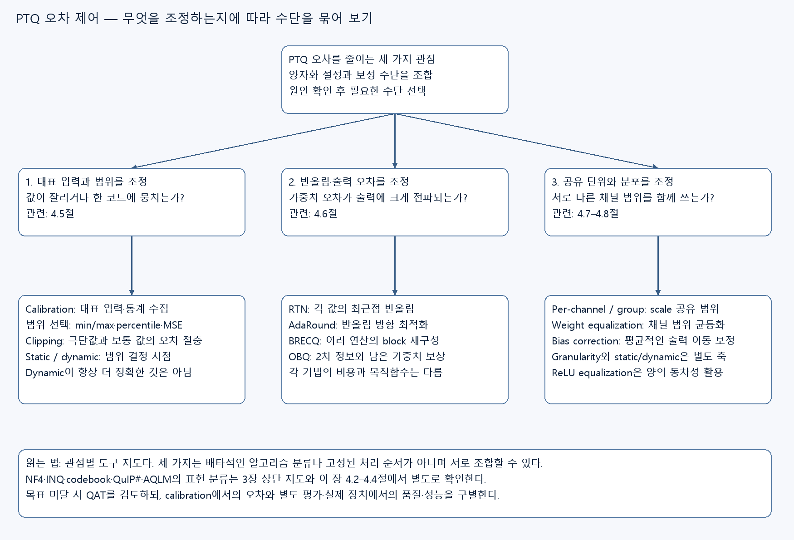
여러 오차 제어 수단을 무엇을 조정하는지에 따라 묶었다. 대표 입력·범위, 반올림·출력 재구성, 공유 단위·분포는 서로 조합하는 관점이며 배타적인 알고리즘 계열이나 고정 절차가 아니다. 표현 방식 자체의 분류는 3장 기존 지도와 이 장 4.2–4.4절을 함께 읽는다.
원본 범위: PDF p.39–54. 강의 해설은 슬라이드의 논리를 풀어 쓴 내용이고, 교육용 보충은 정의·예제·연결 설명이다. 정정·주의는 원문의 단순화를 보완한다. 숫자 실험 결과는 해당 연구의 설정에 대한 결과로 해석한다.
이 장의 질문은 “같은 4비트라도 왜 정확도가 다른가?”다. 대표값을 배치하는 방법, 양자화 범위·반올림을 정하는 방법, scale을 공유하는 단위가 모두 오차를 바꾼다. 이 장을 마치면 이러한 선택을 구별하고, 정확도 저하에 대해 단순히 비트 수를 올리는 것 외의 대안을 제시할 수 있어야 한다.
3장의 q=clip(round(r/S)+Z), r̃=S(q−Z)를 알고 있어야 한다. S는 scale, Z는 zero point, q는 저장 코드, r̃는 복원값이다. 1장의 행렬곱·활성값 개념도 사용한다. 학습 자체가 필요한 QAT의 역전파는 5장에서 설명한다.
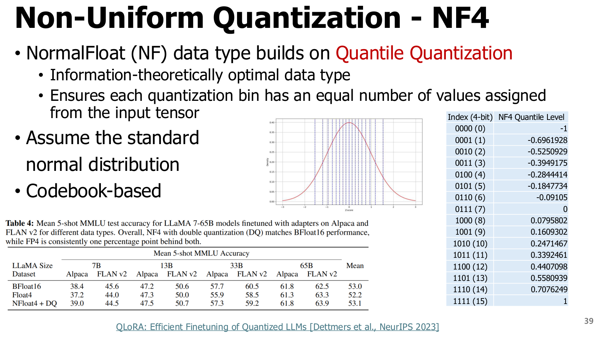
**NormalFloat 4-bit(NF4)**는 4비트 코드를 16개의 비균일한 대표값에 대응시키는 형식이다. **Codebook(코드북)**은 코드와 대표값의 대응표이고, **index(인덱스)**는 해당 대표값을 가리키는 번호다. 같은 4비트라도 정수값 자체를 일정 간격으로 해석하는 INT4와 의미가 다르다.
p.39 읽는 포인트: 표에서 −1과 +1 사이의 간격이 균일하지 않고, 0 부근에 대표값이 더 촘촘하다. 표의 4비트 문자열은 실수 자체가 아니라 대표값을 찾는 index다. 예를 들어 코드 7은 0, 코드 10은 약 0.24715에 대응한다.
**Quantile(분위수)**는 분포의 누적확률을 기준으로 나눈 위치다. 정규분포에서 확률이 많이 모인 영역에 표현값을 더 배정하려는 것이 핵심이다. 실제 저장에서는 보통 블록별 scale로 값을 정규화한 뒤 codebook index를 고른다. 복원은 r̃ = a×C[q]로 이해할 수 있다. 여기서 a>0은 블록 scale, C는 NF4 codebook, q는 0~15 index다. a와 r̃는 원래 가중치와 같은 단위이고 C의 정규화 대표값은 무차원이다.
교육용 보충 — 수치 예: a=2이고 정규화 입력이 0.25라면 대표값 0.2471467을 택할 수 있다. 원래 값은 0.5, 복원값은 약 0.4942934다. 실제 nearest-code 선택·블록 정규화 방식에 맞춰 오차를 확인해야 한다.
정정·주의: “information-theoretically optimal”은 정규분포 가정을 둔 NF4 설계 맥락에서의 주장이다. 어떤 분포·모델·평가지표에도 항상 최적이라는 뜻은 아니다. 블록 정규화와 유한한 표에서는 “각 구간의 실제 원소 수가 언제나 정확히 같다”도 보장하지 않는다. QLoRA 원 논문

**Incremental Network Quantization(INQ, 점진적 네트워크 양자화)**는 일부 가중치를 먼저 0 또는 부호를 갖는 2^k 값으로 양자화해 고정하고, 남은 고정밀 가중치를 재학습해 오차를 보상하는 방법이다. k는 허용된 정수 지수다.
p.40 읽는 포인트: 그림의 양자화된 부분과 아직 고정밀인 부분이 반복마다 달라진다. 전체 절차는 가중치 분할 → 한 그룹 양자화·고정 → 다른 그룹 재학습 → 고정 그룹 확대다. 마지막에는 목표 가중치 전체를 양자화한다. INQ 원 논문
교육용 보충: 2의 거듭제곱과의 곱셈을 shift로 대체할 여지가 있다. 다만 누적, scale, 메모리 배치와 지원 커널까지 포함해 효율성을 판단한다. INQ는 재학습을 포함하는 역사적 비균일 양자화 예로, 단순한 “무학습 PTQ”로 분류하지 않는다.
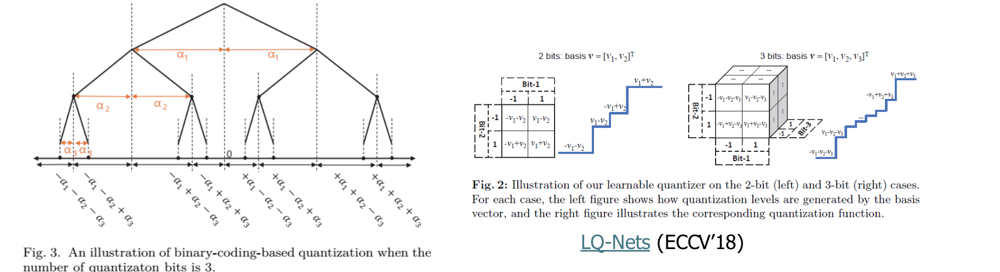
강의의 식은 다음과 같다.
r∈R^n은 n개 원소의 실수 벡터, b_i는 각 원소를 부호 한 비트로 표현하는 길이 n의 이진 벡터다. α_i는 그 벡터에 곱하는 실수 계수이고 m은 조합하는 이진 벡터 수다. α_i는 r와 같은 단위를 갖는다.
p.41 읽는 포인트: 여러 α_i와 ±1 조합으로 대표값이 만들어지므로 값 간격이 학습에 따라 달라질 수 있다. 모든 원소가 단순히 −1 또는 +1로만 바뀌는 binary network와 구별한다. LQ-Nets는 이런 계수와 표현을 학습하는 예이고, BiQGEMM은 관련 표현을 lookup table 기반 행렬곱과 연결한 예다.
검산 예: m=2, α_1=1, α_2=0.3이면 한 원소의 조합은 −1.3, −0.7, 0.7, 1.3 네 값이다. 두 이진 부호로 표현하지만 간격은 0.6,1.4,0.6으로 비균일하다. 원소당 m개의 부호 비트 외에 α 계수의 저장량도 포함해야 한다.

**Weight sharing(가중치 공유)**은 비슷한 가중치가 하나의 대표값을 함께 가리키게 하는 방법이다. **K-means(케이평균 군집화)**는 값을 K개 그룹으로 묶고 각 그룹의 중심값을 찾는 알고리즘이다. 가중치마다 원래 실수를 저장하는 대신 작은 index를 저장하고, 대표값은 codebook에 한 번 저장한다.
p.42 읽는 포인트: 왼쪽의 여러 실수 가중치가 몇 가지 색으로 묶이고, 각 위치에는 색에 해당하는 index가 남는다. 실행 시 index 읽기 → codebook 조회 → 대표값 사용으로 진행한다. codebook 값이 FP16·FP32라면 저장을 줄이더라도 MAC 자체가 같은 비트 수의 정수 연산으로 바뀐 것은 아니다.
교육용 보충 — 저장량 검산: 1,024개 FP32 가중치를 16개 FP32 대표값으로 표현하면 index는 1,024×4=4,096비트, codebook은 16×32=512비트로 총 576바이트다. 원래 4,096바이트 대비 약 7.11배 압축이다. 이 예는 index packing·헤더 비용이 없고 별도 scale이 없다는 가정이다.

p.43 읽는 포인트: Top-1 Error, Top-5 Error는 낮을수록 좋고, Compress Rate는 저장 압축률이다. 예를 들어 표의 AlexNet은 약 240 MB에서 6.9 MB로 작아진다. 이 표는 pruning + trained quantization + Huffman coding을 결합한 Deep Compression 전체 파이프라인의 결과다. codebook 하나만 사용해 모든 모델에서 35~49배 줄어든다는 뜻이 아니다.
평가 용어 보충: Top-1 error는 모델의 가장 높은 점수 예측이 정답이 아닌 비율, Top-5 error는 상위 다섯 예측 안에 정답이 없는 비율이다. 같은 평가 자료에서 accuracy(정확도)와 error(오류율)는 반대 방향으로 읽는다. 압축률은 여기서는 원본 저장량을 압축 후 저장량으로 나눈 배수이며, 정확도나 실행 속도 배수가 아니다.
**Huffman coding(허프먼 부호화)**은 자주 나오는 기호에 짧은 코드를 부여하는 무손실 부호화다. 양자화가 이미 잃은 정밀도를 되돌리는 기법은 아니며, 압축 저장과 실행 중 랜덤 접근 비용은 따로 생각해야 한다.
**Scalar quantization(스칼라 양자화)**은 한 원소마다 대표값을 고른다. **Vector quantization(VQ, 벡터 양자화)**은 d개 원소를 하나의 벡터로 묶고, d차원 대표 벡터를 고른다. VQ는 원소 사이의 관계까지 이용할 수 있지만, codebook 탐색·저장·복호화 비용이 생긴다. “여러 원소가 scale만 공유하는 group quantization”과 “여러 원소를 하나의 index로 표현하는 VQ”는 다른 선택이다.

**Randomized Hadamard Transform(RHT)**는 정규화된 Hadamard 행렬과 무작위 ±1 부호를 사용해 좌표를 섞는 변환이다. Orthogonal(직교) 변환은 전치가 역행렬이며 벡터의 길이를 보존한다. **Isotropic(등방성)**은 특정 방향에 값이 집중되지 않는 성질을 뜻한다.
p.44 읽는 포인트: 먼저 한 좌표에 집중된 큰 값을 여러 좌표에 분산해 양자화에 유리하게 만든다. 그다음 8개 값을 E8 격자 기반 대표 벡터로 함께 표현한다. **Lattice(격자)**는 규칙적인 구조를 갖는 다차원 점 집합이고, E8은 8차원 구조다. 변환이 모든 입력을 정확한 정규분포로 만드는 것은 아니다.
원본의 W̃=UWV^T에서 W는 m×n 가중치, U는 m×m, V는 n×n 직교 행렬이다. 입력·출력에도 대응 변환을 적용해야 원래 연산과 일치한다. 정규화되지 않은 Hadamard 행렬을 그대로 쓰면 크기까지 달라지므로 정규화가 중요하다.
정정·주의 — 256개와 65,536개는 모순이 아니다: 그림은 8비트 base lookup index, 7비트 sign 정보, 1비트 shift 정보로 8차원 codeword를 표현한다. 기본 lookup 표는 256개 항목을 저장하지만, 구조적 변환을 조합한 전체 코드 공간은 16비트다. 따라서 payload는 16/8=2비트/가중치이며 “8개 값 전체를 8비트만으로 나타낸다”로 읽지 않는다. codebook·scale 비용은 별도다. QuIP# 원 논문, E8P codebook
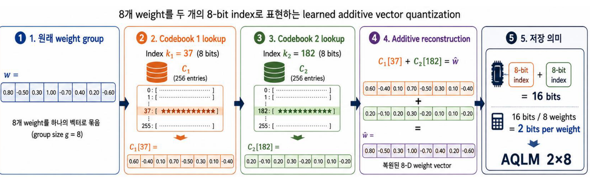
**Additive Quantization(가산 양자화)**은 한 벡터를 여러 codebook에서 뽑은 벡터의 합으로 근사한다. AQLM은 가중치와 입력 특성을 고려해 codebook을 학습하는 접근이다. AQLM 원 논문
w_g는 g번째 그룹의 d차원 가중치 벡터, M은 codebook 수, C_j는 j번째 codebook, k_j는 그 안에서 선택한 index다. 대표 벡터와 w_g는 같은 단위를 갖는다.
p.45 검산: 강의 예는 d=8, M=2이고 각 codebook이 256개 항목을 가진다. index 두 개는 8+8=16비트, 8개 가중치에 대해 payload 2비트/가중치다. 그림의 첫 좌표는 0.60+0.20=0.80, 둘째는 −0.40−0.10=−0.50으로 복원된다. 그림의 정확한 일치는 작동 방식을 설명하는 예이며 임의의 입력이 항상 오차 없이 복원되는 것은 아니다.
| 비교축 | QuIP# 강의 예 | AQLM 강의 예 |
|---|---|---|
| 주된 표현 | 변환 후 격자 구조 기반 VQ | 학습된 여러 codebook의 가산 VQ |
| 8개 가중치의 코드 | base index + sign + shift, 총 16비트 | 8비트 index 두 개, 총 16비트 |
| 기본 대표값 구조 | E8 격자 대칭 구조 활용 | 데이터에 맞게 학습 |
| 복원 | base 조회와 구조적 변환 | codebook 벡터들을 더함 |
| 추가 비용 | codebook·scale·변환·커널 | 여러 codebook 저장·조회·커널 |

**Post-Training Quantization(PTQ, 학습 후 양자화)**은 이미 학습된 모델을 출발점으로 양자화하는 접근이다. **Calibration(보정)**은 소량의 대표 입력을 통과시켜 활성값 분포·범위·민감도 등을 파악하고 양자화 파라미터를 정하는 과정이다. calibration data는 배포 입력을 대표해야 하며, 성능 평가용 데이터와 구분하는 것이 좋다.
p.46 읽는 포인트: PTQ는 모델을 처음부터 다시 학습하지 않는다는 점에서 비용이 낮다. 하지만 단순히 min/max를 구하고 끝나는 RTN뿐 아니라 rounding 선택, 레이어 출력 복원, scale 탐색 등도 포함한다.
정정·주의: 원본의 “without any fine-tuning”은 기초적인 PTQ와 QAT를 대비하는 설명이다. 실제 문헌에서는 PTQ로 분류된 방법도 calibration 기반 최적화, 일부 파라미터 보정, 제한된 fine-tuning을 포함할 수 있다. 예컨대 QuIP#은 자신을 PTQ 방법이라 소개하면서 fidelity를 개선하는 fine-tuning을 포함한다. PTQ라는 이름만으로 어떤 변수가 얼마나 갱신되는지 판단하지 말고 방법의 실제 절차를 확인한다.

p.47 읽는 포인트: 대부분 값은 작지만 256처럼 큰 값이 하나 있을 때, 전체 min/max를 그대로 쓰면 작은 값들이 같은 코드로 뭉칠 수 있다. **Clipping range(클리핑 범위)**는 양자화에 사용할 실수 구간이고, 밖의 값은 끝점에 포화시킨다.
검산 예: 절댓값 최댓값이 256인 대칭 INT8에서 S=256/127≈2.016이다. 이때 r=0.5는 q=0, 복원값 0이 된다. 범위를 −8~8로 줄이면 S=8/127≈0.06299, r=0.5는 q=8, 복원값 약 0.50394가 된다. 대신 r=256은 8로 잘려 큰 오차가 생긴다. 즉 보통 값의 rounding 오차 감소와 outlier의 clipping 오차 증가 사이의 절충이다.
| 범위 결정법 | 정의 | 장점 | 주의 |
|---|---|---|---|
| Min/max | 관측 최솟값·최댓값 사용 | 단순하며 관측 극단값을 보존 | 소수 outlier에 민감 |
| Percentile, 백분위 | 일정 비율의 극단값을 제외한 범위 | 보통 값의 정밀도 개선 가능 | 드물지만 중요한 값도 잘릴 수 있음 |
| MSE 최소화 | 원본·복원 오차 제곱의 평균을 줄이는 범위 탐색 | 오차를 수치 기준으로 비교 | 작은 MSE가 항상 최종 정확도 향상을 뜻하지 않음 |
| 분포 기준 최적화 | 히스토그램 등의 차이를 줄임 | 분포 형태를 고려 | 목적함수·히스토그램 설정에 영향 받음 |
**MSE(Mean Squared Error, 평균제곱오차)**는 N개 값에 대해 Σ(r_i−r̃_i)^2/N이다. 여기서 N은 값 개수이고, MSE의 단위는 r 단위의 제곱이다. 표의 기준은 출발점이며 calibration과 분리된 평가에서 최종 지표를 확인해야 한다.
분포 기준의 용어 보충: Histogram(히스토그램)은 값 구간별 출현 빈도를 센 표다. Entropy(엔트로피)는 분포의 불확실성을 요약하는 양이다. 일부 보정법에서 사용하는 KL divergence(쿨백–라이블러 발산)는 두 확률분포의 차이를 나타내며, 엔트로피 자체를 단순히 최대화하는 것과 다르다. 어떤 분포를 비교하는지와 실제 목적함수를 확인해야 한다.

p.48 읽는 포인트: 가중치는 추론 중 보통 고정되어 범위를 미리 정할 수 있다. 입력에 따라 달라지는 활성값은 미리 정한 범위를 쓰거나, 실행 중 통계를 구해 범위를 바꿀 수 있다.
| 비교축 | Static, 정적 | Dynamic, 동적 |
|---|---|---|
| scale·범위 계산 | 추론 전에 결정 | 입력·토큰 등 실행 단위마다 계산 |
| 필요한 데이터 | 활성값의 경우 대표 calibration 데이터가 흔히 필요 | 실행 입력 자체에서 통계를 구할 수 있음 |
| 장점 | 런타임 통계 계산을 줄임 | 입력별 범위 차이에 적응 가능 |
| 비용·한계 | distribution shift에 취약할 수 있음 | min/max·scale 계산과 동기화 비용 가능 |
| 보장하지 않는 것 | 양자화·복원 비용이 0이라는 뜻 아님 | 정확도가 항상 더 높다는 뜻 아님 |
**Distribution shift(분포 변화)**는 보정 때와 배포 때 입력 분포가 달라지는 현상이다. 한국어 짧은 질의로만 calibration한 모델을 긴 코드 입력에 쓰면 통계가 맞지 않을 수 있다. dynamic도 outlier·비트 부족·커널 비효율까지 자동으로 해결하지는 않는다.

**Round-To-Nearest(RTN, 최근접 반올림)**은 각 가중치가 가장 가까운 대표값으로 가도록 독립적으로 반올림한다. **Adaptive rounding(적응적 반올림)**은 입력을 통과시켰을 때의 출력 오차를 고려해 일부 값을 위·아래 중 어느 쪽으로 보낼지 선택한다.
p.49 읽는 포인트: 개별 가중치의 오차가 작아도 여러 오차가 출력에서 더해져 커질 수 있다. 따라서 ||W−Ŵ||만 작게 만드는 것과 ||WX−ŴX||를 작게 만드는 것은 다른 문제다. 여기서 Ŵ는 양자화·복원된 가중치, X는 calibration 입력이다.
검산 예: 두 가중치 [0.6,0.6]와 입력 [1,1], 대표값 {0,1}을 생각한다. RTN은 [1,1]이므로 원래 출력 1.2가 2가 되어 오차 +0.8이다. 하나는 1, 하나는 0으로 두면 출력 1, 오차 −0.2다. 두 번째 선택은 한 가중치의 개별 오차가 더 크더라도 이 입력의 출력 오차는 작다. 다른 입력에서도 더 좋은지는 별도로 확인해야 한다.
| 방법 | 조정·활용하는 것 | 핵심 목적 | 주의 |
|---|---|---|---|
| RTN | 각 원소의 최근접 코드 | 개별 값 오차 감소 | 입력 민감도를 직접 고려하지 않음 |
| AdaRound | 반올림 방향을 calibration 기반 최적화 | 레이어 출력 차이 감소 | 보정 데이터 대표성 필요 |
| BRECQ | 여러 연산을 포함한 block 복원 | 레이어 사이 의존성까지 일부 고려 | block 경계·최적화 비용 존재 |
| OBQ | 2차 곡률과 다른 가중치 보정 | 한 가중치 양자화가 만드는 출력 손실 증가 감소 | 행렬 연산·수치 안정성 비용 |
AdaRound와 BRECQ는 “PTQ에 최적화가 없어야 한다”는 오해를 바로잡는 예다. 둘 다 학습된 모델의 출력에 대한 복원을 활용한다. AdaRound 원 논문, BRECQ 원 논문
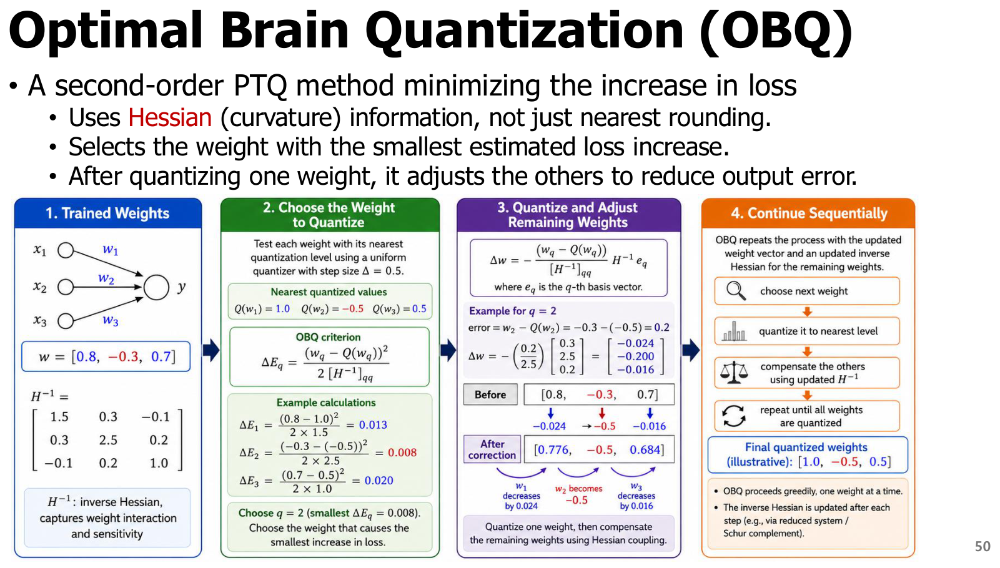
**Optimal Brain Quantization(OBQ)**는 가중치 하나를 양자화할 때 출력 오차가 얼마나 증가하는지 2차 정보로 추정하고, 남은 가중치를 조정해 이를 보상하는 방법이다. **Hessian(헤시안)**은 손실의 2차 미분으로, 방향별 곡률·민감도를 나타내는 행렬이다. **Second-order(2차)**는 이런 곡률 정보를 사용한다는 뜻이다.
교육용 보충 — GPTQ를 위한 연결: 한 출력 행 w와 calibration 입력 X∈R^(k×n)에 대해 L=||wX−ŵX||²를 생각한다. k는 입력 차원, n은 calibration 표본·토큰 수다. δw=ŵ−w라고 두면 L=δw(XX^T)δw^T, Hessian은 H=2XX^T다. 평균 손실을 쓰면 상수 배율이 달라진다. ||·||²는 원소 제곱합이며 단위는 출력 단위의 제곱이다.
p.50 읽는 포인트: 순서는 곡률을 이용해 영향이 작은 가중치 선택 → 그 가중치 양자화 → 다른 가중치의 오차 보상 → 반복이다. 6장의 GPTQ는 이 발상을 대규모 모델에서 효율적으로 실행하도록 바꾼 방법으로 연결된다. “Optimal”이라는 이름이 모든 비트 배정·모델 최종 정확도의 전역 최적해를 보장하는 것은 아니다. Optimal Brain Compression 원 논문

**Granularity(양자화 세분 단위)**는 같은 scale·zero point를 공유하는 범위다. 서로 다른 범위를 가진 값을 큰 그룹으로 묶으면 작은 값이 큰 값의 scale에 끌려가 정밀도를 잃는다. 작은 그룹은 정밀도를 높일 수 있지만 metadata와 커널 처리가 늘어난다.
p.51 읽는 포인트: 채널마다 최대 크기가 매우 다를 수 있다는 점을 본다. 큰 모델과 작은 모델에 대한 슬라이드 설명은 관찰된 경향이며 “per-tensor는 큰 모델에서 항상 충분하다”는 법칙은 아니다.
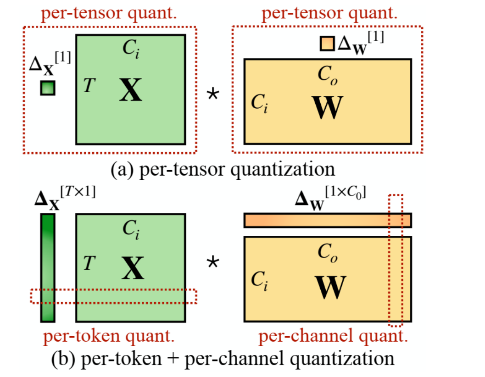
p.52 읽는 포인트: 같은 행렬곱에서도 활성값은 token마다, 가중치는 출력 channel마다 다른 scale을 쓸 수 있다. 이 그림은 행벡터 입력 Y=XW 관례를 쓸 수 있으므로, 3장의 Y=WX와 대조할 때는 입력·출력 의미와 축을 먼저 맞춘다. 행·열이라는 이름만 외우지 않는다.
| 단위 | 정의 | 대표적 사용 | 절충 |
|---|---|---|---|
| Per-tensor | 전체 텐서가 하나의 파라미터 집합 공유 | 단순한 실행 경로 | metadata 적음, 서로 다른 분포를 한 범위로 묶음 |
| Per-output-channel | 출력 채널별로 공유 | CNN·선형층 가중치 | 채널 간 범위 차이 완화, 채널별 scale 필요 |
| Per-group | 정해진 개수의 연속 원소 등이 공유 | 저비트 LLM 가중치 | 작은 그룹일수록 보통 오차 감소·metadata 증가 |
| Per-token | 각 토큰의 feature 벡터가 공유 | LLM 활성값 | 토큰별 크기 차이에 대응, 동적 계산과 결합 가능 |
| Per-head | attention head별로 공유 | KV cache 등 | head별 분포 차이에 대응, 전용 kernel 제약 가능 |
정정·주의: per-token과 dynamic은 서로 다른 축이다. 전자는 공유 범위, 후자는 계산 시점이다. 또한 group의 축과 크기는 구현마다 다를 수 있다. per-channel도 입력 채널인지 출력 채널인지 반드시 명시한다.
검산 예: 두 출력 채널의 가중치 범위가 각각 −0.1~0.1, −10~10이라고 하자. 대칭 INT8을 per-tensor로 쓰면 S=10/127≈0.07874다. 첫 채널의 0.02는 0으로 반올림된다. 첫 채널만의 S=0.1/127≈0.0007874를 쓰면 q=25, 복원값 약 0.019685다. 같은 8비트라도 공유 단위가 오차를 바꾼다.
교육용 보충 — metadata: 대칭 group quantization에서 그룹 크기 g, 원소 b비트, 그룹 scale s비트라면, padding 없는 평균 저장량은 b+s/g비트/원소다. 예를 들어 4비트 원소에 FP16 scale을 32개마다 붙이면 4+16/32=4.5비트/원소다. 비대칭의 zero point·min 값이 추가되면 더 커진다.

**Weight equalization(가중치 범위 균등화)**은 연속된 두 레이어 사이에서 한 채널의 첫 레이어 가중치를 줄이고 다음 레이어의 대응 가중치를 늘려, 양자화 전 모델의 함수를 유지하면서 범위를 비슷하게 만드는 방법이다. **Scaling equivariance(스케일 등변성)**은 스케일을 바꿨을 때 함수 출력이 정해진 방식으로 함께 변하는 성질이다.
정정·주의: 원문은 “Activation function must be linear (e.g., ReLU)”라고 적었지만, ReLU는 선형 함수가 아니다. 필요한 핵심 성질은 양의 s에 대해 ReLU(x/s)=ReLU(x)/s가 되는 **positive homogeneity(양의 동차성)**다. 음의 scale이나 sigmoid·GELU 같은 함수에 같은 논리를 그대로 적용하면 안 된다. Weight Equalization 원 논문
교육용 보충 — 한 채널 식: bias를 생략한 y=W₂ ReLU(W₁x)에서 채널 i의 W₁ 출력 가중치를 s_i>0으로 나누고, W₂의 대응 입력 가중치를 s_i배 하면 함수는 유지된다. bias가 있으면 첫 레이어의 해당 bias도 함께 나눠야 한다. residual·분기 연결이 있으면 연결 전체와 호환되는 변환인지 확인해야 한다.
첫 레이어의 해당 채널 범위를 r₁>0, 다음 레이어 범위를 r₂>0이라고 두면 변환 후 범위는 r₁/s, r₂×s다. 둘을 같게 만들려면
s는 무차원 scale이다. r₁·r₂는 각 가중치 범위의 크기이며, 이 식은 비교 가능한 범위 정의를 사용하는 강의의 equalization 설정이다. 범위가 0이면 별도 처리가 필요하다.
p.53 검산: r₁=16, r₂=1이면 s=4다. 첫 범위는 16/4=4, 다음 범위는 1×4=4가 된다. 양자화 전 함수는 유지하면서 한쪽만 지나치게 넓은 상태를 완화한다. 양자화 후는 반올림 오차 때문에 완전히 같은 함수라고 보장할 수 없다.
**Bias correction(편향 보정)**은 양자화로 출력 평균이 한쪽으로 치우치는 오차를 보상하는 기법이다. equalization이 분포 범위를 조절한다면 bias correction은 평균적인 이동을 줄이는 역할이다. residual 구조·정규화와의 결합은 구현별로 검토해야 한다.

p.54 읽는 포인트: 각 열은 활성값·가중치의 대칭성, granularity, 범위 결정법이 함께 다른 설정이다. 큰 모델의 행과 MobileNet 계열의 행에서 정확도 감소 양상이 다르다. 특히 per-tensor에서 per-channel로 바꾸거나 equalization·bias correction을 적용했을 때 손실이 회복되는지를 본다.
정정·주의: 표의 열들이 여러 설정을 동시에 바꾸므로 한 수치 차이를 단일 원인의 효과로 확정하지 않는다. 그림은 기법 선택이 중요하다는 교육 자료이지, 현재 모든 모델에서 같은 순위를 보장하는 벤치마크가 아니다. 표의 감소율을 최종 정확도 그 자체로 읽어서도 안 된다. CNN 양자화 원 논문·백서
다음은 교육용 검토 순서다. 해당 절차는 통합 양자화 흐름 Canvas와 미리보기로도 확인한다.
같은 비트 수에서도 정확도는 대표값의 모양, clipping 범위, rounding 방향, 공유 단위, 사전 변환에 따라 달라진다. PTQ는 재학습 부담이 작은 출발점이지만, 실제 알고리즘은 calibration·출력 복원·선택적 최적화를 포함할 수 있다. 최종 선택은 정확도·저장량·실행 커널을 함께 비교한다.
| 흔한 오해 | 바르게 이해하기 |
|---|---|
| NF4가 모든 분포에 최적이다 | 정규분포 가정에 맞춘 대표값 설계다 |
| VQ는 group quantization의 다른 이름이다 | VQ는 여러 원소를 공동 대표 벡터로 표현하고, group quant는 scale 공유 단위다 |
| PTQ면 어떠한 최적화도 하지 않는다 | calibration 기반 rounding·복원·보정 등을 포함할 수 있다 |
| Dynamic이 static보다 항상 정확하다 | 입력·비트 수·통계 방식·배포 분포에 따라 다르다 |
| 더 작은 group은 무조건 유리하다 | 오차 감소와 metadata·커널 비용 증가를 함께 본다 |
| ReLU는 선형 함수라 equalization이 된다 | 양의 동차성 때문에 양수 scale을 옮길 수 있다 |
| Deep Compression의 압축률은 양자화만의 효과다 | pruning·양자화·부호화가 결합된 전체 결과다 |
s=√9=3, 새 범위는 각각 9/3=3, 1×3=3이다. 양의 동차성·bias·연결 조건을 만족해야 함수가 유지된다.다음 5장에서는 정확도 복구를 학습 과정에 포함하는 QAT, rounding을 통과시키기 위한 STE, 학습 중 fake quantization과 실제 정수 추론의 차이를 다룬다. 6장의 GPTQ는 이 장의 OBQ·출력 복원과, SmoothQuant·AWQ는 채널 scaling과 연결된다.
원본 범위: p.55–62. 앞 장의 PTQ가 이미 학습된 모델의 표현을 바꾸는 방법이었다면, 이 장은 모델이 양자화 오차에 적응하도록 학습하는 방법을 설명한다. 별도 표시가 없는 그림은 원본 강의자료의 본문 Crop이다. 수치 실험은 원본의 사례이며 모든 모델에서 재현되는 보장이 아니다.
이 장을 마치면 fake quantization의 순전파와 STE의 역전파를 구별하고, 학습용 가중치와 배포용 가중치가 다른 이유를 설명할 수 있어야 한다. 또한 QAT를 수행한 사실만으로 모든 연산이 정수로 실행된다고 단정하지 않아야 한다.
선수 개념은 3장의 scale·zero point·clipping, 4장의 calibration과 PTQ다. **Gradient(기울기)**는 파라미터를 조금 바꿀 때 손실이 변하는 정도이고, **backpropagation(역전파)**은 출력 손실에서 각 파라미터까지 연쇄법칙으로 기울기를 전달하는 계산이다. **Optimizer(최적화 알고리즘)**는 기울기를 이용해 파라미터를 갱신한다. **Fine-tuning(미세조정)**은 사전학습 가중치를 출발점으로 추가 학습하는 것이다.

p.55 읽는 포인트: 이 페이지는 장 구분 페이지다. 핵심 질문은 “양자화된 모델의 성능을 어떻게 회복할 것인가?”다. 여기서 성능은 정확도와 실행 속도를 구분해 읽어야 한다. QAT의 직접적인 목적은 양자화 후 정확도 저하를 줄이는 것이며, 실행 속도는 최종 커널과 배포 환경에 달려 있다.

p.56 읽는 포인트: 두 경로 모두 사전학습 모델에서 시작한다. PTQ 경로는 calibration 후 변환하고, QAT 경로는 양자화의 영향을 학습에 넣어 가중치를 조정한다. QAT를 모델 전체의 사전학습을 처음부터 반복하는 것으로 이해하지 않는다.
**Quantization-Aware Training(QAT, 양자화 인지 학습)**은 학습 중 양자화·복원으로 생기는 오차를 모사해, 배포 시 저정밀 표현에 더 잘 맞는 파라미터를 얻는 방법이다. 반면 **Post-Training Quantization(PTQ, 학습 후 양자화)**는 보통 전체 모델의 일반적인 재학습 없이 통계 추정과 양자화·보정을 수행한다. PTQ 안에서도 AdaRound처럼 보정 목적의 최적화가 있을 수 있으므로 “PTQ는 계산이나 최적화를 전혀 하지 않는다”는 정의는 부정확하다.
| 비교축 | PTQ | QAT |
|---|---|---|
| 모델의 출발점 | 사전학습 모델 | 사전학습 모델 또는 학습 중인 모델 |
| 주요 작업 | calibration, 반올림·범위·스케일 선택, 필요 시 국소 보정 | 양자화 오차를 모사한 forward와 gradient를 이용한 학습 |
| 데이터 | 대표 입력을 담은 작은 calibration 집합을 쓰는 경우가 많음 | 학습 목적에 맞는 데이터·손실이 필요 |
| 비용 | 상대적으로 낮은 편 | 학습 연산, activation, gradient, optimizer 상태 비용 추가 |
| 유리한 상황 | 빠른 변환, 학습 자원 부족, 목표 정확도 이미 충족 | 낮은 비트 수 또는 민감한 모델에서 PTQ 정확도가 부족 |
| 배포 속도 | 실제 저정밀 커널·하드웨어 지원에 달림 | 동일하게 커널·하드웨어 지원에 달림 |
교육용 판단 예시: INT8 PTQ가 목표 정확도를 만족하고 장치에서 빨라졌다면 QAT를 추가할 이유가 크지 않다. 반대로 작은 CNN에서 정확도가 크게 떨어지고 학습 데이터가 있다면 QAT를 검토한다. QAT가 항상 PTQ보다 좋다는 순위보다, 목표 정확도를 회복하는 데 필요한 비용을 비교한다.
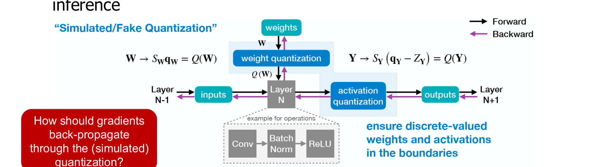
p.57 읽는 포인트: 순전파는 양자화된 값을 모사하고, 역전파는 고정밀 가중치를 갱신한다. 그림의 full-precision weights와 discrete-valued weights가 서로 다른 역할임을 확인한다.
**Fake quantization(모의 양자화)**은 정수 코드로 양자화한 뒤 다시 실수로 복원해, 일반적인 학습 연산 안에서 양자화 오차를 재현하는 것이다. 대표적인 affine fake quantizer는 다음과 같다.
여기서 \(w\)는 학습용 실수 가중치, \(S>0\)는 실수 단위/code의 scale, \(Z\)는 정수 zero point, \(q\)는 정수 코드, \(q_{\min},q_{\max}\)는 표현 가능한 코드 범위, \(\widetilde w\)는 복원된 학습용 순전파 값이다. clip은 범위를 벗어난 값을 끝값으로 제한한다. 가중치에 물리 단위가 없는 경우 이 값들도 무차원이다.
**Master weight(기준 가중치)**는 작은 업데이트를 누적하기 위해 보존하는 고정밀 파라미터다. 강의의 전형적인 구성에서는 FP32 사본을 사용한다. 실무의 mixed-precision 학습에서는 파라미터·gradient·optimizer 상태별 dtype이 달라질 수 있다. 중요한 점은 8비트 정수 가중치만으로 작은 gradient를 직접 누적하지 않는다는 것이다.
검산 예시: \(S=0.1, Z=0\), clipping이 발생하지 않는다고 하자. \(w=0.26\)은 \(q=3\), \(\widetilde w=0.3\)이 된다. 작은 학습 업데이트가 0.01이면 master weight는 0.25가 된다. 그 즉시 정수 코드가 바뀌지 않더라도, 반복 갱신으로 양자화 경계를 넘을 수 있다. 매번 0.3에 업데이트 후 다시 반올림하면 작은 변화가 계속 사라질 수 있다. 경계값 0.25의 반올림 결과는 ties-to-even 등 반올림 규칙에 따라 달라지므로 예제의 요점은 경계 규칙보다 고정밀 누적의 필요성이다.
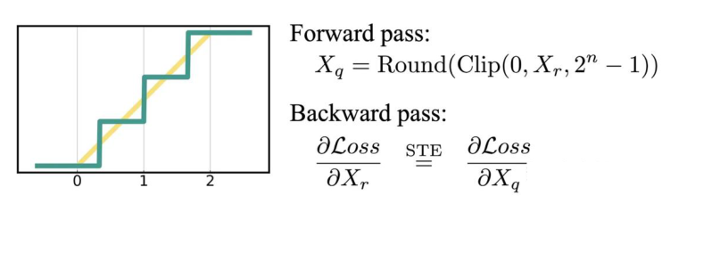
p.58 읽는 포인트: 계단형 양자화 함수의 진짜 기울기와, 학습을 위해 대신 사용하는 기울기를 구분한다. 양자화 함수는 구간 내부에서 기울기가 0이고 경계에서는 일반적인 의미로 미분되지 않는다. 강의의 delta-spikes 표현은 이 불연속성을 직관적으로 보여주는 설명이지, 일반적인 backpropagation에서 그대로 사용하는 gradient가 아니다.
**Straight-Through Estimator(STE, 직통 기울기 추정기)**는 순전파에는 반올림을 사용하면서 역전파에는 계산 가능한 대체 기울기를 쓰는 규칙이다. 가장 단순한 identity STE는 \(\partial\widetilde w/\partial w\approx1\)로 놓는다. clipping을 반영한 구현은 표현 구간 내부에서 1, 외부에서 0인 마스크를 사용하는 경우도 있다. 이 선택은 구현·학습법에 따라 다르다.
\(\mathcal L\)은 학습 손실, \(\eta\)는 학습률, \(w\)는 master weight다. 이 식은 clipping 범위 내부의 identity STE를 가정한다. STE는 정확한 미분이나 불편추정량이라는 보장이 없다. 극저비트·binary처럼 양자화 오차가 큰 상황에서는 학습 안정성과 대체 기울기 선택을 더 신중히 검토해야 한다.

p.59 읽는 포인트: 위쪽 forward는 master weight를 quantize한 값으로 손실을 계산하고, 아래쪽 backward는 그 손실의 신호를 master weight로 돌려보낸다. “역전파에서 양자화를 무시한다”는 것은 forward 오차까지 없애는 말이 아니다. forward는 양자화 오차를 그대로 반영한다.
교육용 연결: QAT의 학습 흐름은 FP master → fake quant → forward·loss → STE backward → master update다. 배포 흐름은 학습 완료 후 별도로 최종 scale 확정 → 정수 코드 저장 → 지원 커널로 변환을 거친다. 양자화 학습·배포 Canvas와 미리보기에서도 이 두 경로를 구분해 읽는다.
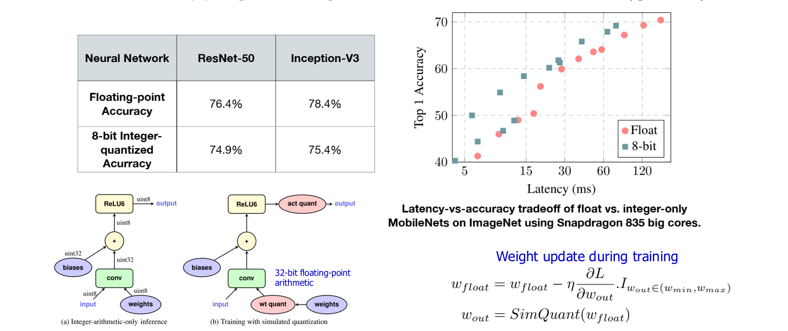
p.60 읽는 포인트: 학습 가중치 갱신이 32비트 부동소수점 연산이라는 표시와, 추론 시 integer arithmetic 경로를 함께 본다. 학습을 INT8로 모두 실행한다는 뜻이 아니다. 정수 추론에서 곱셈 입력이 INT8이어도 누산은 흔히 INT32를 사용한다.
**Accumulator(누산기)**는 여러 곱의 합을 저장하는 값이다. 좁은 INT8 누산기는 쉽게 overflow하므로 더 넓은 표현을 쓴다. **Requantization(재양자화)**은 INT32 누산 결과를 다음 연산이 요구하는 scale과 비트 수로 다시 변환하는 단계다. **Integer-only inference(정수 전용 추론)**는 정해진 추론 경로를 정수·고정소수점 연산으로 구현한다는 뜻이며, 입력·출력 인터페이스의 표현까지 무조건 같다는 뜻은 아니다. QAT와 정수 연산을 함께 설계한 대표 사례가 Jacob 등의 원 논문이다.
| 단계 | 대표 표현 | 확인할 사항 |
|---|---|---|
| QAT 파라미터 보존·갱신 | FP32 등 고정밀 master | 작은 업데이트가 누적되는가 |
| QAT 순전파 | 실수 텐서에 fake quant 적용 | 배포의 clipping·rounding과 일치하는가 |
| 배포 가중치 저장 | INT8 코드와 scale·zero point | 메타데이터를 포함한 용량은 얼마인가 |
| 정수 행렬곱 | INT8 곱, INT32 누산 등 | 지원 커널, overflow, bias scale이 맞는가 |
| 비선형·정규화 | 정수 근사 또는 실수 fallback | “전체 정수 실행”이 실제로 성립하는가 |

p.61 읽는 포인트: 빨간 상자는 QAT 결과이며, MobileNet 계열에서 PTQ보다 회복되는 원본 실험 사례다. 예를 들어 MobileNetV2의 floating-point 71.9%와 QAT symmetric per-channel 71.1%의 차이는 **0.8 percentage point(%p)**다. 상대 오차 0.8%와 혼동하지 않는다. 원본 표는 배치·데이터 전처리·calibration 세부 설정을 모두 제공하지 않으므로, 숫자를 새 장치의 성능 보장으로 사용하면 안 된다. PTQ 0.1%도 해당 구성의 실패 사례이지 PTQ 일반의 성능이 아니다.
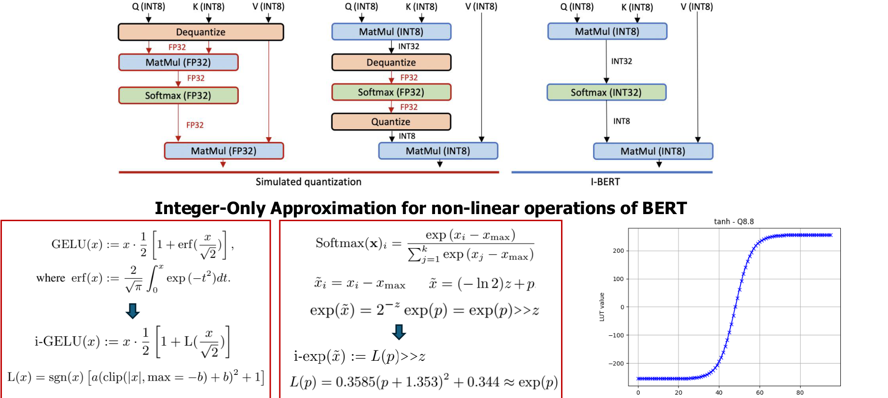
p.62 읽는 포인트: 행렬곱을 INT8로 바꾼 뒤에도 GELU·Softmax·LayerNorm이 남는다. 그림은 이 연산들을 정수 연산으로 근사하는 I-BERT 사례다. 그래프의 곡선이 근접하다는 사실과 전체 모델의 정확도가 보장된다는 주장을 구분한다.
| 용어 | 정의와 역할 | 정수화가 까다로운 이유 |
|---|---|---|
| GELU(Gaussian Error Linear Unit) | 입력의 크기에 따라 부드럽게 통과시키는 활성화 함수 | 정규분포 함수와 곱을 그대로 정수 연산하기 어려움 |
| Softmax | logits를 합이 1인 비음수 확률로 바꾸는 함수 | 지수함수, 합, 나눗셈과 넓은 동적 범위를 다룸 |
| LayerNorm | 각 샘플의 정해진 feature 축을 평균·분산으로 정규화 | 제곱근·나눗셈·scale 처리가 필요 |
| Polynomial approximation | 복잡한 함수를 저차 다항식으로 근사 | 근사 구간 밖 오차와 고정소수점 overflow 관리 필요 |
| Fallback | 지원하지 않는 연산을 다른 dtype·backend로 실행 | 변환·전송 비용과 혼합 정밀 경로가 생김 |
교육용 보충: Softmax는 먼저 입력 최댓값을 빼도 결과가 같다. 이 성질은 지수함수의 입력 범위를 제한해 근사와 안정성을 돕는다. 그러나 어떤 다항식이나 LUT만 끼우면 해결되는 것이 아니라, 정수 표현 범위·scale·반올림·누산을 함께 설계해야 한다. I-BERT 원 논문은 BERT 계열에서 GELU·Softmax·LayerNorm의 정수 근사를 제시한다. 이것을 모든 LLM·NPU에 즉시 적용되는 범용 기능으로 읽지 않는다.
QAT의 핵심은 양자화 오차가 있는 순전파와 학습 가능한 대체 기울기를 결합하는 데 있다. 고정밀 master weight로 작은 업데이트를 누적하고, 배포 단계에서 정수 코드·커널·비선형 연산 지원을 별도로 검증한다.
| 흔한 오해 | 바로잡기 |
|---|---|
| QAT는 처음부터 모델 전체를 다시 학습한다 | 사전학습 모델의 미세조정으로 수행할 수도 있다 |
| Fake quant는 실제 INT8 커널의 속도를 보여준다 | 학습 오차를 모사하며 배포 속도와 별개다 |
| STE는 반올림의 정확한 미분이다 | 학습을 위한 대체 gradient 규칙이다 |
| QAT가 끝나면 전 연산이 정수다 | 비선형·정규화·backend fallback까지 확인해야 한다 |
다음 장 연결: 대형 LLM에서는 전체 QAT의 자원 부담이 크다. 따라서 activation outlier를 완화하는 변환, calibration 기반 가중치 양자화, 양자화된 기저 모델 위의 소수 어댑터 학습 등 서로 다른 해법을 비교한다.

여러 기법의 이름을 외우기 전에 주된 수단과 목적을 구분한다. 추론 양자화의 오차 제어 수단과 QLoRA의 업무 미세조정 목적을 나누었다. 기법 간 조합이 가능하므로 이 그림을 배타적인 분류나 성능 순위로 읽지 않는다. W/A/KV 대상과 llama.cpp 저장 형식은 별도 설계축이다. 원본 범위: p.63–80. 이 장은 Part 1의 마지막 장이다. p.63의 학습 비용과 p.69·77의 정확도·속도 비교는 원본의 시점과 실험 조건에 따른 설명이며, 최신 모델의 가격·지원·성능으로 단정하지 않는다. 그림은 원본 강의자료의 본문 Crop이다.
학습 목표는 병목에 맞춰 양자화 대상을 정하고, outlier 대응 방법의 차이를 설명하며, 저장 dtype·계산 dtype·학습 대상을 구별하는 것이다. 1장의 prefill/decode와 KV cache, 3장의 선형 양자화, 4장의 calibration·granularity, 5장의 QAT·gradient를 먼저 알아야 한다.
W4A16은 보통 가중치 4비트 저장과 activation 16비트를 뜻한다. 이 표기만으로 곱셈 커널·누산 dtype·KV cache 정밀도를 알 수는 없다. **Outlier(이상값)**는 다른 값에 비해 절댓값이 큰 값이나 feature를 말한다. 오류 데이터라는 뜻은 아니며 중요한 정보를 담을 수 있다. **Perplexity(PPL, 혼란도)**는 언어모델이 정답 토큰을 얼마나 잘 예측하는지 나타내는 지표로, 같은 데이터·토큰화·평가 조건에서는 낮을수록 좋다. 서로 다른 조건의 PPL은 직접 비교하지 않는다.
이 장의 기본 행렬 표기는 입력 \(X\in\mathbb R^{T\times d}\), 가중치 \(W\in\mathbb R^{d\times m}\), 출력 \(Y=XW\in\mathbb R^{T\times m}\)다. \(T\)는 처리 token 수, \(d\)는 입력 feature 수, \(m\)은 출력 feature 수이며 모두 개수다. GPTQ 절만 원본에 맞춰 전치된 column-sample 표기를 명시한다.
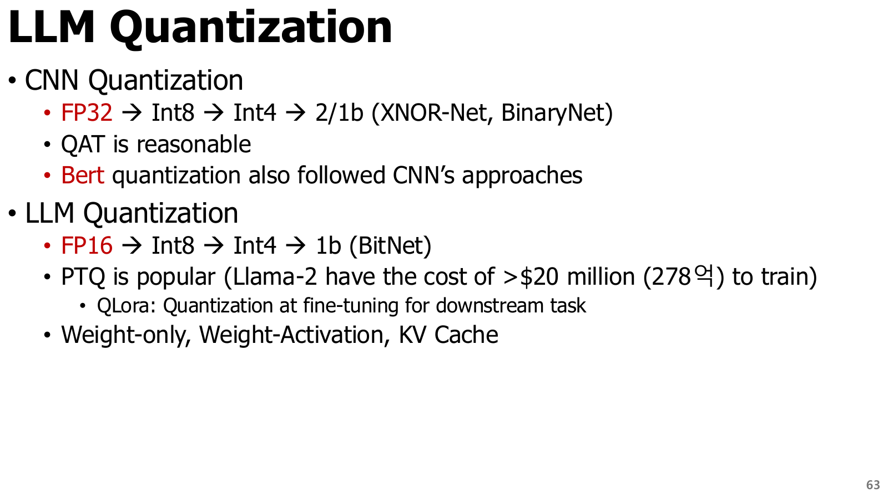
p.63 읽는 포인트: CNN에서 익힌 원리를 LLM으로 옮기되, 모델 규모와 비용 때문에 PTQ가 실용적인 선택이 되는 맥락을 읽는다. 원본의 달러·원화 학습비는 모델 학습 전체에 대한 시점 의존 사례이며, QAT나 개인 미세조정의 비용 견적이 아니다. BitNet 같은 저비트 학습 모델과 기존 FP 모델을 사후 변환한 결과도 구별해야 한다.
| 대상 | 줄이려는 비용 | 주로 유의할 점 |
|---|---|---|
| Weight-only, 예: W4A16 | 가중치 저장량과 메모리 전송량 | 복원·packing·지원 커널 overhead, activation·KV 메모리는 별도 |
| Weight + activation, 예: W8A8 | 가중치·activation 이동과 저정밀 행렬곱 | activation outlier, token별 분포, Q/DQ 비용 |
| KV cache | 긴 context·여러 요청에서 증가하는 cache 메모리 | K/V 분포 차이, attention 품질, cache 갱신·복원 비용 |
교육용 용량 예제: 7×10⁹개의 가중치를 16비트에서 4비트로 저장하면 값 본체는 14 GB에서 3.5 GB로 줄어든다. 여기서 GB는 10⁹ byte다. scale·zero point·비양자화 tensor·정렬 공간은 제외했다. 총 실행 메모리는 여기에 KV cache, activation, workspace와 runtime 비용을 더해야 하므로 3.5 GB 장치에서 실행된다는 뜻은 아니다.

p.64 읽는 포인트: 분포가 layer·token·channel에 따라 바뀌는 모습을 본다. Token-wise dynamic quantization은 token별 activation 통계로 scale을 실행 중 정하는 방식이다. Group-wise weight quantization은 한 가중치 행·열의 연속된 일부 값을 묶어 scale을 공유한다. 작은 group은 분포에 잘 맞지만 scale metadata가 늘어난다. 원본의 “각 head는 독립 학습된다”는 문장은 head별 분포가 다를 수 있다는 직관으로 읽는다. Transformer는 보통 하나의 목적함수로 공동 학습하며, head마다 완전히 독립된 학습 작업을 수행한다는 뜻은 아니다.
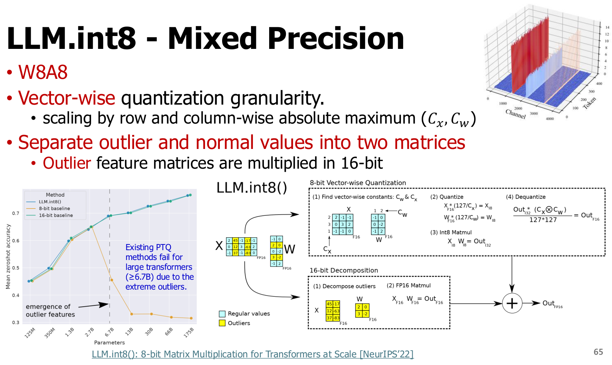
p.65 읽는 포인트: 일반 feature 경로와 outlier feature 경로를 나눈 뒤 출력을 합치는 구조를 본다. 단순히 tensor 전체를 INT8로 반올림하는 것과 다르다.
**LLM.int8()**은 vector-wise scale과 mixed-precision decomposition을 결합한다. Vector-wise는 행렬곱의 입력·가중치 vector에 따라 별도 scale을 두는 것이다. feature 집합을 일반 부분 \(N\)과 outlier 부분 \(O\)로 나누면 개념적으로 다음과 같다.
\(Q_8\)은 8비트 양자화, Dequant는 해당 scale로 복원하는 연산이다. \(N,O\)는 입력 feature 축의 서로 겹치지 않는 분할이며, 두 항의 출력 모양은 \(T\times m\)으로 같다. outlier 항은 16비트 경로로 처리해 정보 손실을 줄인다. 어느 feature를 outlier로 정하는지와 threshold는 구현 조건을 확인해야 한다. 원본의 6.7B 전후 관찰은 당시 분석 대상 모델에서 나타난 현상이지 모든 모델 크기에 적용되는 경계가 아니다. LLM.int8 원 논문은 이러한 분해를 제시한다.

p.66 읽는 포인트: activation의 특정 channel에 세로로 반복되는 큰 값을 찾는다. SmoothQuant는 값을 단순 삭제하는 대신 activation과 weight를 반대 방향으로 rescale한다.
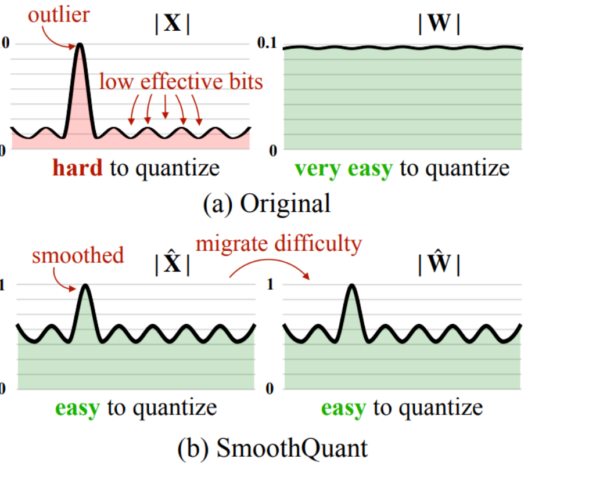
p.67 읽는 포인트: 원래 activation 분포는 넓고 weight 분포는 상대적으로 다루기 쉬운 상황을 가정한다. smoothing 뒤 activation은 양자화하기 쉬워지는 대신 weight 쪽 난이도가 증가한다. 두 tensor를 모두 같은 방향으로 줄이는 그림으로 읽지 않는다.
양의 channel scale \(s_j>0\)를 대각원소로 갖는 \(D=\operatorname{diag}(s_1,\ldots,s_d)\)를 사용하면
이는 양자화 전 실수 연산에서 정확한 등가 변환이다. \(D\)는 \(d\times d\), \(XD^{-1}\)은 입력 channel을 줄이고 \(DW\)는 대응 weight 행을 키운다. \(s_j\)는 calibration activation과 weight의 channel 통계로 offline 결정한다. 그 뒤 두 tensor를 저정밀화하면 서로 다른 오차가 생기므로 변환의 등가성과 양자화의 무손실성을 구별한다.

p.68 읽는 포인트와 검산 예시: \(X=[10,1]\), \(W=[1,2]^\top\), \(D=\operatorname{diag}(10,1)\)이면 원래 출력은 12다. 변환 후 입력은 \([1,1]\), 가중치는 \([10,2]^\top\)이므로 출력은 여전히 12다. 이 예제는 상쇄를 보이는 것이며 최적 scale이나 실제 INT8 오차 개선을 보장하는 수치는 아니다.
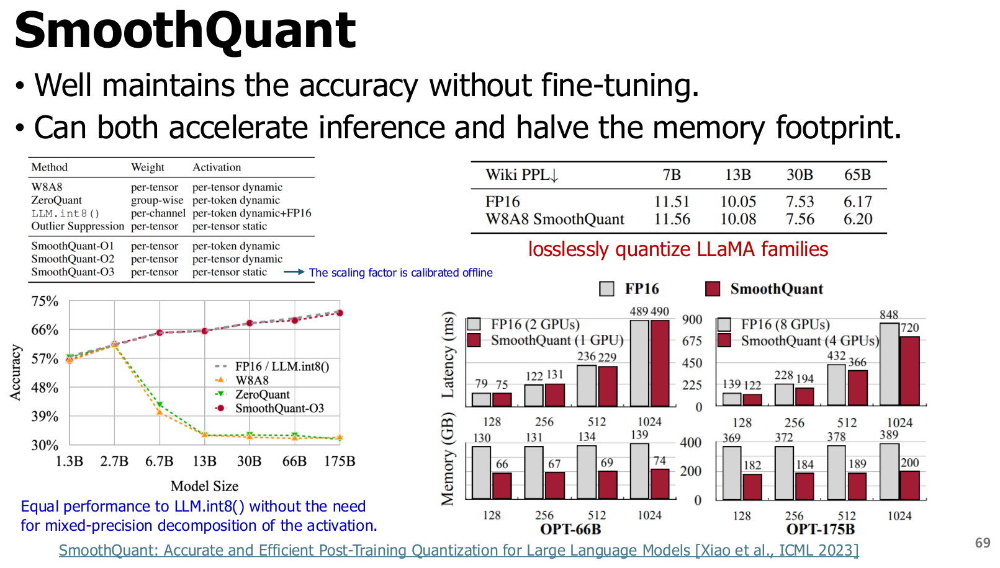
p.69 읽는 포인트: 정확도 표와 속도·메모리 그래프는 서로 다른 평가축이다. 원본의 “losslessly”는 해당 평가 지표에서 손실이 거의 없다는 결과 표현이지 모든 입력에서 원래 출력과 bitwise 동일하다는 뜻이 아니다. SmoothQuant 원 논문의 주요 목표는 W8A8 추론이다. 해당 실험의 메모리 절감이나 가속을 W4A4, 모든 장치, 전체 프로세스 peak memory로 그대로 확대하지 않는다.

p.70 읽는 포인트: 회전 전 일부 feature에 집중된 큰 값이 회전 후 여러 축으로 분산되는 모습을 본다. 값의 정보 자체를 지우는 것이 아니라 표현 좌표계를 바꾼다.
Orthogonal matrix(직교 행렬) \(R\in\mathbb R^{d\times d}\)는 \(RR^\top=R^\top R=I\)를 만족한다. 따라서 \(R^{-1}=R^\top\)이다. \(I\)는 항등행렬이다. **Hadamard transform(하다마드 변환)**은 ±1 패턴으로 구성한 직교 변환을 정규화해 사용하는 방법이며, randomized 변형은 부호 등을 무작위화한다.
원문 수식 정정: p.70의 \((XR)(R^{-1}W^{-1})=XW^\top\) 표기는 일반적인 선형 layer 등가식으로 성립하지 않는다. 이 문서의 \(Y=XW\) 표기에서 올바른 기본식은
가중치를 \(W\in\mathbb R^{m\times d}\)로 저장해 \(Y=XW^\top\)라 쓰는 관례라면 \(W'=WR\), \(X'=XR\)로 두어 \(X'W'^\top=XW^\top\)가 된다. 원문의 \(|R|=1\)은 행렬식 표기다. 일반 직교 행렬은 determinant가 ±1이고, 방향을 보존하는 회전은 +1이다. 따라서 이를 “R 자체가 1”로 읽으면 안 된다.
QuaRot은 이러한 불변성을 Transformer 구조에 맞게 적용하고 outlier를 분산해 weight·activation·KV cache의 4비트화를 추구한다. 임의의 비선형 함수 앞뒤에 R과 Rᵀ를 삽입하면 항상 상쇄되는 것은 아니다. residual·정규화·attention·실행 중 변환의 위치를 함께 설계해야 한다. QuaRot 원 논문은 이 구조를 제시한다. 원본에 병기된 RRS와 OstQuant는 관련 후속 변환 연구의 예시이며, 같은 알고리즘의 다른 이름은 아니다. 그림의 QSUR은 해당 그림에서 사용하는 양자화 공간 활용 지표로 읽고 보편적인 정확도 지표와 동일시하지 않는다.
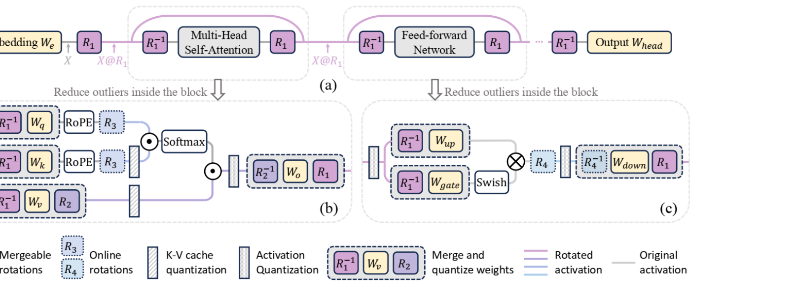
p.71 읽는 포인트: 회전을 고정하는 것과, 양자화 후 손실이 작아지도록 회전을 최적화하는 것을 비교한다. SpinQuant은 회전 행렬을 학습하는 방법이다. Cayley SGD는 직교성 제약을 유지하는 갱신을 구성하기 위해 Cayley transform을 활용하는 최적화 방식이다. 여기서 SGD는 stochastic gradient descent(확률적 경사하강법)를 뜻한다. SpinQuant 원 논문은 무작위 회전 선택에 따른 성능 편차를 줄이려는 학습 접근을 설명한다. 회전 파라미터 최적화와 모델 전체의 일반적인 QAT는 학습 대상과 비용이 같지 않다.
| 비교축 | SmoothQuant | QuaRot | SpinQuant |
|---|---|---|---|
| 기본 변환 | channel별 대각 scaling | 직교·Hadamard 계열 회전 | 학습한 직교 회전 |
| outlier 대응 | activation 난이도를 weight 쪽으로 이전 | 큰 값을 좌표축 사이로 분산 | 양자화 손실을 고려해 분산 방향 선택 |
| 대표 목표 | W8A8 | W4A4·KV4 경로 | W4A4·KV4의 품질 개선 |
| 추가 작업 | 대표 입력 통계 calibration | 구조 변환과 필요 online 회전 | 회전 최적화용 데이터·계산 |
| 확인할 비용 | scale fusion, Q/DQ | online transform·packing·커널 | 최적화 비용과 최종 runtime |
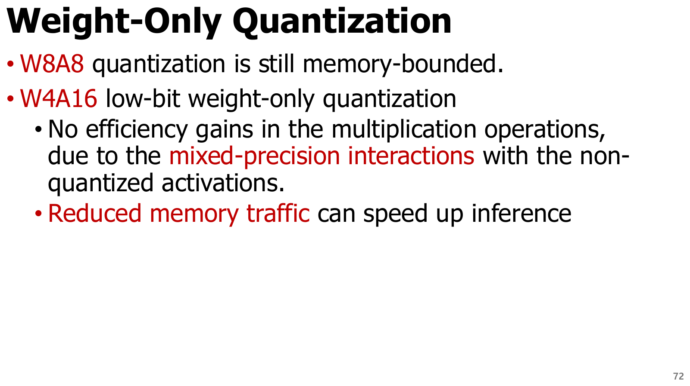
p.72 읽는 포인트: W4A16의 장점은 우선 weight 전송량 감소다. weight를 4비트로 저장하더라도 multiplication을 native INT4로 수행한다는 뜻은 아니다. fused dequantization과 행렬곱 구현에 따라 실제 속도가 달라진다. 원본의 “W8A8도 memory-bound”는 특정 decode·batch·장치 조건에서의 설명으로 읽어야 한다. 큰 prefill이나 batch에서는 병목이 바뀔 수 있다.

p.73 읽는 포인트: 가장 가까운 정수로만 반올림하지 않고, 한 weight를 양자화한 오차를 아직 양자화하지 않은 weight로 보상한다. OBQ에서 출발하되 대형 행렬에 적용하도록 계산을 조직한다.
GPTQ는 calibration 입력에 대한 layer 출력의 차이를 줄이는 weight PTQ다. **Reconstruction(재구성)**은 원본 layer 출력을 양자화 layer 출력으로 가깝게 재현하는 목적을 뜻한다. **Hessian(헤시안)**은 손실의 2차 미분 행렬이며 오차 방향에 따른 곡률을 나타낸다. 여기서는 원본 GPTQ 슬라이드와 맞추기 위해 \(X_c\in\mathbb R^{d\times n}\)에 calibration sample을 열로, \(W_c\in\mathbb R^{m\times d}\)에 출력 channel을 행으로 놓는다.
\(n\)은 calibration 위치 수, \(\widehat W_c\)는 양자화·복원한 가중치, \(\|\cdot\|_F\)는 모든 원소 제곱합의 제곱근인 Frobenius norm이다. row별 동일한 입력을 사용하므로 이 국소 목적의 Hessian을 행 사이에 공유할 수 있다. 실제 안정화에는 damping 등 수치 처리가 필요하며, 이것을 모델 전체 task loss의 정확한 Hessian이라고 부르면 안 된다.
Damping(감쇠·대각 안정화) 보충: 입력 feature가 선형 종속이면 \(H=2X_cX_c^\top\)가 특이행렬이 되어 역행렬을 구할 수 없을 수 있다. \(H_\lambda=2X_cX_c^\top+\lambda I\), \(\lambda>0\)처럼 양의 대각 보정값을 더하면 수치 안정성과 Cholesky 분해를 확보하는 데 도움이 된다. \(\lambda\)는 안정화 강도이며 실제 구현의 선택·크기를 확인해야 한다.
**Cholesky decomposition(콜레스키 분해)**은 양의 정부호 행렬을 삼각행렬의 곱으로 나타내는 것이다. GPTQ는 이러한 수치 구조와 **lazy batch update(지연 블록 갱신)**를 활용해 weight 양자화와 오차 보정을 효율적으로 조직한다. GPTQ 원 논문은 근사 2차 정보를 이용한 one-shot weight quantization을 제시한다.

p.74 읽는 포인트와 검산: 이 그림은 0.5 간격으로 양자화하는 개념 예제다. 첫 열의 첫 값 0.80을 1.00으로 양자화하면 오차 \(e=0.80-1.00=-0.20\)이다. 그림의 첫 inverse-Hessian 행에서 첫 대각값이 1, 다음 값이 −0.30이면, 다음 weight −0.24에 대한 보정은 \(-0.24-(-0.20)(-0.30)/1=-0.30\)이다. 이후 −0.30을 양자화하면 −0.50이 되어, 보정 없이 −0.24를 0.0으로 반올림한 결과와 달라진다. 그림의 단계별 Schur-complement 표는 보상 직관을 설명한다. 실제 GPTQ의 Cholesky 기반 구현에서 이 작은 표들을 매번 그대로 만드는 것으로 읽지 않는다. 모든 후속 숫자는 구현의 반올림 규칙·damping·블록 처리에 따라 달라질 수 있다.

p.75 읽는 포인트: 중요한 1% channel을 FP16으로 남겼을 때 PPL이 크게 개선되는 실험은 중요도 가설을 확인하는 관찰이다. 최종 AWQ를 “항상 weight 1%를 FP16으로 저장하는 알고리즘”이라고 정의하면 안 된다. 원본의 43.2→13.0은 그림의 해당 실험 설정에 한정한다.
**Activation-aware Weight Quantization(AWQ, 활성값을 고려한 가중치 양자화)**는 입력 activation 통계로 중요한 weight channel을 찾아 scaling으로 보호한다. weight 크기만 보는 대신 실제 입력에 의해 출력에 얼마나 영향을 주는지 고려한다. 최종 설계는 하드웨어에 불리한 mixed-precision 보존을 피하려는 방향이다. AWQ 원 논문은 이러한 등가 scaling 기반 접근을 제시한다.

p.76 읽는 포인트: scale \(s>1\)로 중요한 channel을 키우고, 대응 입력을 역으로 나누어 실수 연산의 등가성을 유지한다. 기본 상쇄 식은 SmoothQuant와 같은 \((XD^{-1})(DW)\)이지만, 어느 오차를 줄이려는가가 다르다. AWQ는 low-bit weight-only의 출력 오차를 줄이기 위한 channel 보호가 중심이다.
교육용 보충: activation 절댓값 평균 \(a_j=\frac1N\sum_{i=1}^N|x_{ij}|\) 등을 구해 \(s_j\propto a_j^\alpha\), \(0\le\alpha\le1\) 같은 후보를 탐색할 수 있다. \(N\)은 통계를 수집한 입력 위치 수, \(j\)는 feature channel, \(\alpha\)는 탐색 지수다. 이는 원리를 설명하는 단순화이며, 실제 정규화·clipping·검색 방식은 구현을 확인해야 한다. 한 channel을 키우면 group 전체 scale도 바뀔 수 있으므로 모든 channel의 오차가 동시에 감소한다는 보장은 없다.

p.77 읽는 포인트: 모델과 bit 수가 고정된 열 안에서 비교한다. calibration 재구성에 과도하게 맞추는 문제는 검토할 가치가 있지만, 표 한 장으로 “AWQ가 항상 GPTQ보다 좋다”거나 “GPTQ는 반드시 과적합한다”고 결론내리지 않는다. 목표 도메인과 별도 평가 입력에서 검증해야 한다.
| 비교축 | GPTQ | AWQ |
|---|---|---|
| 핵심 판단 | layer 출력 재구성 오차의 곡률과 보상 | activation 통계에 기반한 channel 중요도 |
| 주요 처리 | weight 순차 양자화와 남은 weight의 오차 보정 | 중요 channel scaling과 weight quantization |
| 대표 대상 | low-bit weight-only | low-bit weight-only |
| calibration의 역할 | 재구성 목적과 근사 2차 정보 추정 | activation 통계와 scale 후보 평가 |
| 검증할 위험 | calibration 대표성, 수치 안정성, 과도한 국소 적합 | 통계 대표성, group scale 상호작용 |
| 배포 시 공통 확인 | 저장 형식·group·커널·성능·품질 | 저장 형식·group·커널·성능·품질 |

p.78 읽는 포인트: 기저 모델의 4비트 저장과 학습 가능한 어댑터를 구분한다. gradient가 기저 모델의 계산을 통과할 수 있다는 것과 기저 weight가 업데이트된다는 것은 다르다.
**Low-Rank Adaptation(LoRA, 저랭크 적응)**은 큰 weight 갱신을 작은 두 행렬의 곱으로 표현해 학습 파라미터 수를 줄이는 기법이다. 이 장의 \(W\in\mathbb R^{d\times m}\) 표기에서
\(\widehat W\)는 양자화 저장 후 계산용으로 복원한 고정 기저 weight, \(A,B\)는 학습하는 adapter 행렬, \(r\)은 rank, \(c\)는 adapter 배율이다. 가중치 본체의 학습 파라미터 \(dm\)개 대신 \(r(d+m)\)개를 학습한다. 예를 들어 \(d=m=4096,r=8\)이면 본체 16,777,216개와 비교해 adapter는 65,536개로 약 0.39%다. optimizer 상태 감소에 유리하지만 activation 메모리가 없어지는 것은 아니다.
QLoRA는 frozen quantized base와 LoRA를 결합한다. **NF4(NormalFloat 4-bit)**는 정규분포를 가정한 비균일 codebook 기반 표현으로, 보편적인 IEEE FP4나 INT4와 다르다. Paged optimizer는 unified-memory paging 등을 활용해 optimizer 관련 메모리 급증을 관리한다. CPU 이동이 생기면 전송 비용이 발생할 수 있으며, 모든 optimizer가 항상 CPU에 있다는 뜻은 아니다. QLoRA 원 논문은 NF4, double quantization, paged optimizer를 결합한다.
| 구분 | QLoRA의 대표 구성 | 의미 |
|---|---|---|
| 기저 모델 저장 | NF4 코드와 block scale | 저장 비용 절감 |
| 행렬곱 계산 | 복원 후 BF16 등 | 4비트 code를 모든 연산에서 직접 곱한다는 뜻이 아님 |
| 학습 대상 | LoRA adapter | frozen base의 모든 weight를 업데이트하지 않음 |
| gradient 경로 | 모델 계산을 거쳐 adapter까지 전파 | base weight 업데이트 여부와 별개 |
| 배포 형태 | base+adapter 또는 병합·재변환 | target runtime 지원과 품질을 다시 검증 |

p.79 읽는 포인트: double quantization의 두 번째 대상은 weight 값 자체가 아니라 첫 번째 양자화의 scale 상수다. BF16 계산과 NF4 저장이 함께 보이는 이유도 확인한다.
검산: 64개 weight마다 FP32 scale 하나를 저장하면 scale 비용은 \(32/64=0.5\) bit/weight다. 이를 8비트로 양자화하고, 256개 scale마다 FP32 상위 scale 하나를 공유하는 단순 모델에서는
절감량은 약 0.37305 bit/weight다. 따라서 4비트 코드에 이 scale만 더한 유효 저장량은 약 4.12695 bit/weight가 된다. 기타 상수, tensor별 예외, padding, 비양자화 layer, adapter와 optimizer는 제외한 계산이다. 전체 학습 메모리가 FP16 대비 정확히 4배 줄어든다고 해석하지 않는다.
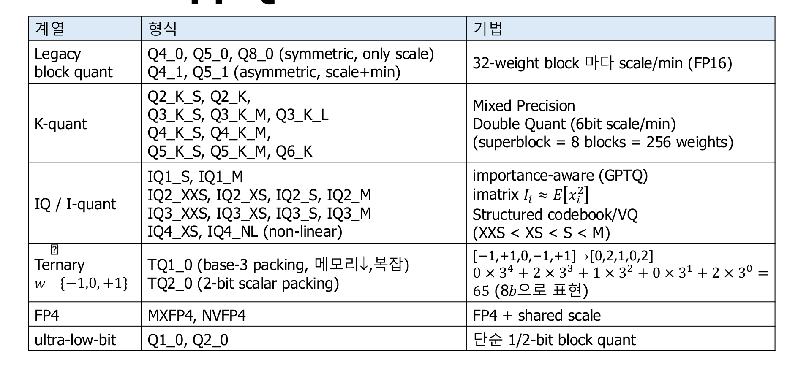
p.80 읽는 포인트: 표의 행은 모두 동일한 구현이 아니다. 값 본체의 bit 수, block scale, 중요도 정보, codebook, packing을 나누어 본다. 아래 형식명은 강의 원문 목록의 분류 예시다. 실제 사용 가능 형식·모델·backend는 설치한 llama.cpp 버전에서 확인해야 하며, 원본만으로 최신 지원을 단정하지 않는다.
| 계열 | 강의의 예시 | 이해해야 할 구조·주의 |
|---|---|---|
| Legacy block | Q4_0, Q4_1, Q5_0, Q5_1, Q8_0 | block 단위 scale, 형식에 따라 min 등을 추가. 같은 Q4라도 metadata·복원식이 다름 |
| K-quant | Q2_K, Q3_K_, Q4_K_, Q5_K_*, Q6_K | superblock과 하위 scale·min 표현. 모든 K 형식이 똑같은 6비트 metadata 구조는 아님 |
| IQ/I-quant | IQ1_, IQ2_, IQ3_*, IQ4_XS, IQ4_NL | 중요도·격자·codebook·비균일 표현 등을 활용하는 여러 형식. 모든 형식이 같은 VQ나 GPTQ 구현은 아님 |
| Ternary | TQ1_0, TQ2_0 | 값 집합을 −1,0,+1로 제한하고 base-3 또는 scalar packing 등으로 저장 |
| FP4 | MXFP4, NVFP4 | FP4 값과 공유 scale. native 커널·장치 지원 별도 확인 |
| 극저비트 예시 | Q1_0, Q2_0 | 강의 목록에 있는 명칭. 해당 버전의 실제 정의·지원 여부 확인 필요 |
**Importance matrix(imatrix, 중요도 통계)**는 calibration activation의 제곱 평균 등으로 weight 오차가 출력에 미치는 영향을 가중하는 정보다. 원본의 \(I_i\approx E[x_i^2]\)에서 \(x_i\)는 i번째 입력 feature, \(E\)는 calibration 입력에 대한 평균이다. GPTQ도 입력 통계를 활용하지만, imatrix 사용을 곧 GPTQ의 Hessian 기반 순차 보정과 동일시해서는 안 된다.
Packing(비트 묶음 저장) 검산: 원본의 삼진 예제는 \([-1,+1,0,-1,+1]\)을 \([0,2,1,0,2]\)로 매핑한다. 이를 \(0\times3^4+2\times3^3+1\times3^2+0\times3+2=65\)로 저장한다. 5개의 삼진 값은 \(3^5=243\)가지이므로 8비트에 넣을 수 있어 1.6 bit/value다. 이 값은 해당 toy packing의 값 본체만 계산한 것이며 전체 모델의 scale·정렬 비용은 제외했다.
교육용 보충: Q4의 “4”는 보통 값 코드 폭을 가리키며 파일 전체의 정확한 평균 4 bit/weight를 뜻하지 않는다. 같은 계열의 S/M/L 접미사도 모든 모델·형식에 공통인 품질 서열로 해석하지 않는다. 실제 파일 크기와 정확도는 tensor별 정밀도 배치·형식 정의·모델 구조에 달려 있다.
양자화 기법은 단일 순위가 아니라 병목·정확도·지원 커널의 조합으로 선택한다. 아래는 교육용 판단 예시이며 특정 제품 구매나 최신 backend 지원을 추천하는 목록이 아니다.
| 관측 상황 | 검토할 방향 | 결론 전에 측정할 것 |
|---|---|---|
| batch=1 decode에서 weight 읽기가 지배적 | 지원되는 low-bit weight-only | token/s, dequant 비용, PPL·업무 품질 |
| prefill 행렬곱 비중이 크고 INT8 커널이 잘 지원됨 | W8A8과 outlier 대응 | TTFT, 입력 길이별 품질, Q/DQ·fusion |
| INT4 activation에서 일부 feature 때문에 품질이 악화 | scaling·회전 계열 | 변환 비용과 정확도, 모델 구조 호환성 |
| 긴 대화에서 KV cache가 메모리를 지배 | KV 양자화 또는 Part 2의 cache 최적화 | 긴 context 품질, cache 비용, decode 지연 |
| 메모리가 부족하지만 업무 맞춤 미세조정이 필요 | QLoRA 같은 adapter 학습 | 학습 peak memory, adapter 품질, 배포 경로 |
| 저비트 PTQ 품질이 목표 미달이고 학습 자원이 있음 | QAT 또는 학습 기반 보정 | 학습 비용, 분포 변화, 최종 device 성능 |
**TTFT(Time To First Token, 첫 토큰 시간)**는 요청에서 첫 출력 토큰까지 걸리는 시간이다. **TPOT(Time Per Output Token, 출력 토큰당 시간)**는 이후 token 생성 간격을 나타낸다. token/s와 함께 측정하되 측정 구간·batch·동시 요청 수를 명시해야 한다.
배포 전에는 같은 prompt·tokenizer·출력 길이로 FP 기준과 비교한다. 품질 평가에는 calibration에서 보지 않은 업무 데이터와 긴 context를 포함한다. 파일 크기, peak RAM/VRAM, TTFT·TPOT, 전력·열 제약, 실패·fallback 여부를 기록한다. **VRAM(Video RAM)**은 GPU의 전용 메모리를 가리키며, 통합·공유 메모리 구조에서는 시스템 RAM과 중복 합산하지 않는다. 멀티모달 모델은 언어 측면 PPL뿐 아니라 실제 이미지 이해 과제를 확인한다. 이러한 흐름은 양자화 적용 Canvas와 미리보기를 함께 읽는다.
| 용어 | 짧은 정의 | 다시 볼 절 |
|---|---|---|
| W4A16 / W8A8 | 가중치·activation 정밀도 조합 표기 | 6.1–6.2 |
| Outlier | 분포의 다른 값보다 절댓값이 큰 값·feature | 6.1, 6.3–6.5 |
| Mixed precision | 일부 계산·tensor를 다른 정밀도로 처리 | 6.3 |
| Offline calibration | 배포 전 대표 입력으로 통계·scale 추정 | 6.4, 6.7 |
| Orthogonal / Hadamard | 길이를 보존하는 직교 변환 / ±1 기반 변환 | 6.5 |
| Reconstruction / Hessian | 출력 재현 목적 / 손실의 2차 곡률 행렬 | 6.6 |
| Salient channel | 출력에 중요하여 오차 보호가 필요한 channel | 6.7 |
| LoRA / QLoRA | 저랭크 adapter 학습 / 양자화 frozen base 위 adapter 학습 | 6.8 |
| NF4 / double quant | 정규분포 기반 4비트 codebook / scale 상수의 추가 양자화 | 6.8 |
| Imatrix / packing | 입력 통계 기반 중요도 / 여러 코드를 비트에 묶어 저장 | 6.9 |
| TTFT / TPOT | 첫 출력까지의 시간 / 이후 토큰당 생성 시간 | 6.10 |
LLM.int8은 outlier를 고정밀 경로로 분리하고, SmoothQuant는 channel scaling으로 activation 난이도를 이전한다. QuaRot·SpinQuant는 좌표계를 바꾸고, GPTQ는 출력 재구성의 곡률을 활용하며, AWQ는 activation으로 중요한 weight channel을 보호한다. QLoRA는 이들과 목적이 다른 메모리 효율적인 adapter 미세조정 접근이다. 형식의 이름과 실제 계산 경로는 별도로 검증해야 한다.
| 흔한 오해 | 바로잡기 |
|---|---|
| 변환이 수학적으로 등가면 양자화도 무손실이다 | 등가성은 양자화 전 실수 계산의 성질이다 |
| AWQ는 weight 1%를 항상 FP16으로 남긴다 | FP16 실험은 중요도 관찰이며 최종은 scaling 기반 보호다 |
| QLoRA는 모든 weight를 NF4로 업데이트한다 | frozen base를 통해 gradient를 전달하며 adapter를 학습한다 |
| 4비트 저장이면 4비트 곱셈이다 | 복원 후 FP16/BF16 계산하는 경로도 있다 |
| IQ는 GPTQ의 다른 이름이다 | 중요도 정보와 양자화 보정 알고리즘을 구분해야 한다 |
| 가장 작은 파일이 가장 빠르다 | unpacking·커널·cache·batch에 따라 달라진다 |
Part 2로 이어지는 질문: weight를 줄인 뒤 KV cache나 attention 메모리가 새 병목이 될 수 있다. 원본 p.2의 pruning·knowledge distillation·KV 최적화·speculative decoding·FlashAttention은 후속 과정이며 이 Part 1에서 상세 학습한 것으로 간주하지 않는다.
이 부록은 강의 슬라이드를 설명하는 본문을 읽은 뒤 적용 판단까지 이어지도록 만든 교육용 보충 자료다. 원본에 없는 실험 결과나 실행 검증 결과를 주장하지 않는다.
| 앞에서 배운 개념 | 다음 개념으로 넘어가는 질문 | 연결 설명 | 다시 볼 장 |
|---|---|---|---|
| DNN의 가중치와 활성값 | 왜 둘을 따로 양자화하는가? | 가중치는 학습 후 대체로 고정되지만 활성값은 입력에 따라 달라진다. 범위 결정 시점과 적합한 granularity가 다르다. | 1 → 3 → 4 |
| 행렬곱 | 비트 수를 낮추면 항상 빨라지는가? | 저장량 감소, 메모리 전송 감소, 연산 커널의 실제 저정밀 실행을 각각 확인해야 한다. unpack·Q/DQ 비용도 있다. | 1 → 3 → 6 |
| Roofline | 왜 prefill과 decode를 나누어 측정하는가? | 토큰 병렬성과 가중치 재사용이 다르므로 동일 모델도 단계별 병목과 개선 효과가 달라진다. | 1 → 6 |
| 파라미터 용량 | 4비트 모델 파일이 RAM에 들어가면 충분한가? | KV cache, 중간 활성값, 임시 workspace, scale, 런타임과 운영체제 여유를 더해야 한다. | 1 → 2 → 6 |
| 균일 양자화 | 왜 clipping이 오히려 정확도를 높일 수 있는가? | 극단값 일부의 오차를 허용해 대부분 값의 양자화 간격을 줄일 수 있다. 검증 데이터로 전체 오차를 평가해야 한다. | 3 → 4 |
| Scale과 zero point | 왜 채널·토큰·group마다 다르게 정하는가? | 서로 다른 분포를 하나의 범위에 넣으면 작은 값의 유효 정밀도가 줄어든다. 세분화하면 metadata와 커널 비용이 늘어난다. | 3 → 4 → 6 |
| PTQ | calibration 데이터는 학습 데이터인가? | 대표 입력을 사용한다는 점은 같지만 목적이 다르다. PTQ는 범위·통계·보정에, QAT는 양자화 영향을 고려한 파라미터 학습에 사용한다. 별도 평가 데이터로 품질을 확인한다. | 4 → 5 |
| 양자화 함수의 반올림 | QAT는 어떻게 미분하는가? | forward는 이산화를 모사하고 backward는 STE 등의 대리 gradient를 사용한다. 정확한 미분과 구분해야 한다. | 3 → 5 |
| Outlier | SmoothQuant·AWQ·회전은 무엇이 다른가? | SmoothQuant는 W/A의 양자화 난도를 재분배하고, AWQ는 활성 통계로 중요한 가중치 채널을 보호하며, 회전은 좌표계에 집중된 큰 값을 분산한다. 목표 비트와 커널까지 함께 선택한다. | 4 → 6 |
| QAT | QLoRA도 같은 목적의 방법인가? | QAT의 중심은 양자화 오차에 강한 모델 학습이다. QLoRA는 양자화한 기반 모델을 고정하고 저랭크 어댑터를 학습해 downstream fine-tuning 비용을 줄인다. | 5 → 6 |
가정은 파라미터 수가 정확히 \(7\times10^9\), 모든 파라미터를 같은 비트 수로 저장한다는 단순화다. FP16 순수 가중치 payload는 \(7\times10^9\times2=14\times10^9\) bytes, 즉 14 GB(약 13.04 GiB)다. INT4 payload는 3.5 GB(약 3.26 GiB)다. 블록 scale, 양자화하지 않는 텐서, 파일 metadata, 런타임 버퍼는 이 계산에 포함되지 않는다.
따라서 INT4 payload가 장치 RAM보다 작다는 사실만으로 실행 가능하다고 결론내리지 않는다. 실제 모델의 KV head 수·레이어 수·head dimension·최대 토큰 수·동시 요청 수를 넣어 KV cache를 더하고, backend가 해당 형식과 연산을 지원하는지 확인한다. 그다음 대표 입력으로 품질과 peak RAM을 측정한다.
TTFT(Time To First Token)는 요청 시작부터 첫 출력 토큰까지의 시간이다. 전처리, 대기, 모델 로드 여부, prefill, 첫 토큰 선택이 포함될 수 있으므로 측정 경계를 먼저 고정한다. 긴 프롬프트의 prefill이 원인인지, 매번 발생하는 cold load가 원인인지 분리한다. decode tokens/s만으로 개선 여부를 판단하지 않는다. 반대로 첫 토큰은 빠른데 이후 느리다면 decode의 메모리 트래픽과 KV cache 증가부터 본다.
즉시 QAT로 넘어가기 전에 calibration 입력의 대표성, clipping 범위, per-channel/group 설정, 민감 연산의 precision, 실제 fallback 여부를 확인한다. 그래도 허용 정확도를 넘는다면 학습 데이터와 계산 예산을 고려해 QAT를 검토한다. QAT가 항상 우수하거나 PTQ가 항상 열등하다는 순위는 없다. 같은 모델·데이터·비트·backend·측정 조건에서 비교해야 한다.
기반 모델을 모두 학습할 메모리가 없다면 QLoRA처럼 저비트 기반 모델을 고정하고 어댑터를 학습하는 방법을 검토한다. 다만 학습에 성공한 모델을 장치에 배포하려면 어댑터 로딩·병합·재양자화와 런타임 지원을 별도로 확인해야 한다. 메모리 절약 학습과 장치 추론 가속은 서로 다른 검증 항목이다. 기반 모델 고정과 어댑터 학습의 구분은 QLoRA 원 논문에 근거한다.
아래는 실습을 실시할 때 사용할 양식이다. 이번 문서 작성 과정에서 이 실습을 수행한 것은 아니다.
| 기록 항목 | 반드시 고정하거나 기입할 내용 |
|---|---|
| 모델 | 모델 ID·revision, 파라미터 수, tokenizer, context 설정 |
| 양자화 | W/A/KV bit, group 크기, scale 형식, calibration 자료와 방법 |
| 환경 | 장치·OS·RAM, 전용 GPU VRAM 또는 unified/shared memory 구분, framework/backend 버전, CPU/GPU/NPU, 스레드 수 |
| 입력 | 입력·출력 토큰 수, batch·동시 요청 수, 대표 문장과 긴 문장 |
| 품질 | 기준 모델과 동일 평가 세트, task accuracy 또는 perplexity, 허용 하락폭 |
| 지연 | cold/warm 구분, warm-up·가속기 동기화·생성 종료 조건, TTFT, ITL(Inter-Token Latency: 연속 출력 토큰 간 지연), p50/p95 |
| 처리량 | 출력 tokens/s와 요청 처리량, 동시에 만족해야 할 지연 제한 |
| 메모리 | 모델 파일, load 후 RAM, peak RAM, 전용 GPU VRAM, KV cache 증가량을 분리. 공유 메모리는 중복 합산하지 않음 |
| 지속 실행 | 전력·발열, 장시간 실행 후 thermal throttling 여부 |
| 해석 | fallback, Q/DQ·packing 비용, 측정 반복 횟수, 실패 입력 |
**Perplexity(PPL)**는 언어 모델이 평가 토큰에 얼마나 높은 확률을 주는지를 요약한 값이다. 일반적으로 낮을수록 해당 평가 자료의 다음 토큰 예측이 좋지만, tokenizer·데이터·계산 방식이 다르면 숫자를 직접 비교할 수 없다. PPL 하나로 실제 업무 정확도를 대체하지 않는다. p50/p95는 측정값 분포의 50/95 백분위수이며, 평균만으로 드러나지 않는 지연 변동을 보여준다. Thermal throttling은 온도 제한을 지키기 위해 동작 속도를 낮추는 현상이다.
성능 단위 주의: 가속기의 TOPS(Tera Operations Per Second, 초당 10¹²회 연산)는 dtype·dense/sparse 조건·MAC 계수 관례와 함께 기록한다. INT8 MAC은 부동소수점 연산인 FLOP와 다르다. 연산 두 번으로 세는 관례가 같더라도 TOPS와 FLOP/s를 조건 없이 비교하거나, 이를 tokens/s·지연시간과 등치하지 않는다.
정의의 자세한 설명과 수식은 해당 장을 참조한다.
| 용어 | 최소 정의 | 장 |
|---|---|---|
| Parameter / weight | 학습을 통해 결정되는 모델 계수 / 연결 가중치 | 1 |
| Activation | 입력을 처리하는 동안 생성되는 중간 텐서 값 | 1 |
| Feature map | CNN 층에서 추출한 공간적 특징 텐서 | 1 |
| Attention / Q·K·V | Query와 Key의 유사도로 Value를 가중 결합하는 연산 | 1 |
| Token | tokenizer가 나눈 모델 입력·출력 단위 | 1 |
| Prefill / decode | 프롬프트 처리 단계 / 이후 순차 토큰 생성 단계 | 1 |
| KV cache | 이전 토큰에서 계산한 Key·Value의 재사용 저장소 | 1 |
| MHA / MQA / GQA | KV head를 각각 독립 / 전체 공유 / 그룹 공유하는 attention 구성 | 1 |
| GEMM / GEMV | 일반 행렬-행렬곱 / 행렬-벡터곱 | 1 |
| MAC / FLOP | 곱셈과 누산 / 부동소수점 기본 연산 수; 부동소수점 MAC 1회는 FLOP 2회로 셈. 정수 MAC은 별도 정수 ops | 1 |
| Arithmetic intensity | 외부 메모리 전송 byte당 수행한 연산 수 | 1 |
| Roofline | 최대 연산 처리율(FLOP/s 또는 해당 정수 ops/s)과 메모리 대역폭으로 성능 상한을 설명하는 모델 | 1 |
| NPU / PIM | 신경망 연산 가속기 / 메모리 내부·근처 연산 구조 | 2 |
| AOT / backend delegation | 실행 전 컴파일 / 지원 연산을 특정 실행 backend에 위임 | 2 |
| GGUF / GGML | 모델·metadata 저장 형식 / 텐서 연산 라이브러리 | 2 |
| FP / INT | 부동소수점 / 정수 표현 | 3 |
| Scale / zero point | 정수 간격의 실수 크기 / 실수 0에 대응하는 정수 값 | 3 |
| Clipping / saturation | 표현 범위를 벗어난 값을 경계로 제한하는 동작 | 3·4 |
| Quantization error | 원래 값과 양자화 후 복원한 값의 차이 | 3 |
| Q/DQ | Quantize / Dequantize: 저비트 부호화 / 실수 값으로 복원 | 3 |
| Fusion | 연산을 합쳐 중간 저장·변환·실행 호출 비용을 줄이는 기법 | 3 |
| Microscaling | 작은 블록이 scale을 공유하는 저정밀 표현 | 3 |
| Codebook / VQ | 대표 값 집합 / 여러 원소 벡터를 대표 벡터로 부호화 | 4 |
| NF4 | 정규분포 가정에 맞춰 설계된 4비트 비균일 표현 | 4 |
| Calibration | 대표 입력으로 양자화 범위·통계·보정 설정을 결정하는 과정 | 4 |
| Granularity | 하나의 scale을 공유하는 값들의 범위 | 4 |
| RTN / adaptive rounding | 최근접 반올림 / 출력 오차를 고려해 올림·내림 선택 | 4 |
| Hessian | 손실의 두 번째 미분으로 곡률·변화 민감도를 나타내는 행렬 | 4·6 |
| PTQ / QAT | 사전학습 후 양자화 / 양자화 영향을 고려한 학습 | 4·5 |
| Fake quantization | 실수 연산 안에서 양자화·복원의 효과를 모사 | 5 |
| STE | 이산 연산의 역전파에서 쓰는 대리 gradient 추정 방식 | 5 |
| Outlier | 나머지 값에 비해 크기 등이 크게 벗어난 값·특징 | 6 |
| W4A16 / W8A8 | 가중치 4·활성값 16비트 / 양쪽 8비트 표기 | 6 |
| Orthogonal transform | 역행렬이 전치인 변환; 좌표계를 바꾸면서 길이·내적을 보존 | 6 |
| LoRA / adapter | 저랭크 행렬로 업데이트를 표현 / 추가 학습하는 작은 모듈 | 6 |
| Double quantization | scale 등 양자화 상수도 다시 양자화하는 방식 | 6 |
| Packing / fallback | 저비트 값을 저장 단위에 묶기 / 지원되지 않은 연산을 다른 실행 경로로 처리 | 6 |
| 원본 페이지 | 원본 주제 | 해설 장 | 원본 이미지 |
|---|---|---|---|
| p.1 | 표지 | 1장 | Crop |
| p.2 | 강의 구성 | 1장 | Crop |
| p.3 | Deep Neural Network | 1장 | Crop |
| p.4 | Convolutional Neural Networks (CNNs) | 1장 | Crop |
| p.5 | Transformer | 1장 | Crop |
| p.6 | LLM Operations | 1장 | Crop |
| p.7 | Large Language Models | 1장 | Crop |
| p.8 | Vision Language Model | 1장 | Crop |
| p.9 | Cloud AI vs. On-Device AI | 1장 | Crop |
| p.10 | Model | 1장 | Crop |
| p.11 | Performance | 1장 | Crop |
| p.12 | Parameters, Activations, FLOPs | 1장 | Crop |
| p.13 | Memory | 1장 | Crop |
| p.14 | Memory - LLM Inference | 1장 | Crop |
| p.15 | Memory - LLM Inference | 1장 | Crop |
| p.16 | On-Device AI Enablers | 2장 | Crop |
| p.17 | Model Compression Techniques | 2장 | Crop |
| p.18 | Small LLMs | 2장 | Crop |
| p.19 | Llama.cpp | 2장 | Crop |
| p.20 | Llama.cpp | 2장 | Crop |
| p.21 | ExecuTorch | 2장 | Crop |
| p.22 | NPU | 2장 | Crop |
| p.23 | Hailo Software Stack | 2장 | Crop |
| p.24 | Quantization | 3장 | Crop |
| p.25 | Quantization | 3장 | Crop |
| p.26 | Numeric Data Types | 3장 | Crop |
| p.27 | MX (Microscaling) | 3장 | Crop |
| p.28 | NVFP4 | 3장 | Crop |
| p.29 | Design Choices in LLM Quantization | 3장 | Crop |
| p.30 | Uniform vs Non-Uniform | 3장 | Crop |
| p.31 | Linear Quantization | 3장 | Crop |
| p.32 | Linear Quantization | 3장 | Crop |
| p.33 | Linear Quantization | 3장 | Crop |
| p.34 | Linear Quantization | 3장 | Crop |
| p.35 | Linear Quantized Matrix Multiplication | 3장 | Crop |
| p.36 | Asymmetric vs. Symmetric | 3장 | Crop |
| p.37 | Symmetric Quantization | 3장 | Crop |
| p.38 | Quant/Dequant Overhead | 3장 | Crop |
| p.39 | Non-Uniform Quantization - NF4 | 4장 | Crop |
| p.40 | Non-Uniform Quantization – 2K | 4장 | Crop |
| p.41 | Non-Uniform Quantization | 4장 | Crop |
| p.42 | Learned Quantization (Codebook) | 4장 | Crop |
| p.43 | Learned Quantization | 4장 | Crop |
| p.44 | Vector Quantization | 4장 | Crop |
| p.45 | Vector Quantization | 4장 | Crop |
| p.46 | Post-Training Quantization (PTQ) | 4장 | Crop |
| p.47 | Range Mapping and Clipping | 4장 | Crop |
| p.48 | Static vs Dynamic Quantization | 4장 | Crop |
| p.49 | Rounding | 4장 | Crop |
| p.50 | Optimal Brain Quantization (OBQ) | 4장 | Crop |
| p.51 | Per-Channel Weight Quantization | 4장 | Crop |
| p.52 | Per-Channel Weight Quantization | 4장 | Crop |
| p.53 | Weight Equalization | 4장 | Crop |
| p.54 | Post-Training INT8 Linear Quantization | 4장 | Crop |
| p.55 | Quantization-Aware Training (QAT) | 5장 | Crop |
| p.56 | Fine-tuning Methods | 5장 | Crop |
| p.57 | Quantization-Aware Training | 5장 | Crop |
| p.58 | Gradient of Quantization Function | 5장 | Crop |
| p.59 | Quantization-Aware Training | 5장 | Crop |
| p.60 | INT8 Linear Quantization-Aware Training | 5장 | Crop |
| p.61 | INT8 Linear Quantization-Aware Training | 5장 | Crop |
| p.62 | Approximation for Nonlinear OPs | 5장 | Crop |
| p.63 | LLM Quantization | 6장 | Crop |
| p.64 | Weight/Activation Variance | 6장 | Crop |
| p.65 | LLM.int8 - Mixed Precision | 6장 | Crop |
| p.66 | SmoothQuant | 6장 | Crop |
| p.67 | SmoothQuant | 6장 | Crop |
| p.68 | SmoothQuant | 6장 | Crop |
| p.69 | SmoothQuant | 6장 | Crop |
| p.70 | QuaRot | 6장 | Crop |
| p.71 | SpinQuant | 6장 | Crop |
| p.72 | Weight-Only Quantization | 6장 | Crop |
| p.73 | GPTQ | 6장 | Crop |
| p.74 | GPTQ | 6장 | Crop |
| p.75 | AWQ | 6장 | Crop |
| p.76 | AWQ | 6장 | Crop |
| p.77 | AWQ | 6장 | Crop |
| p.78 | QLoRA = LoRA+Quant | 6장 | Crop |
| p.79 | Double Quantization | 6장 | Crop |
| p.80 | Llama.cpp Quantization | 6장 | Crop |